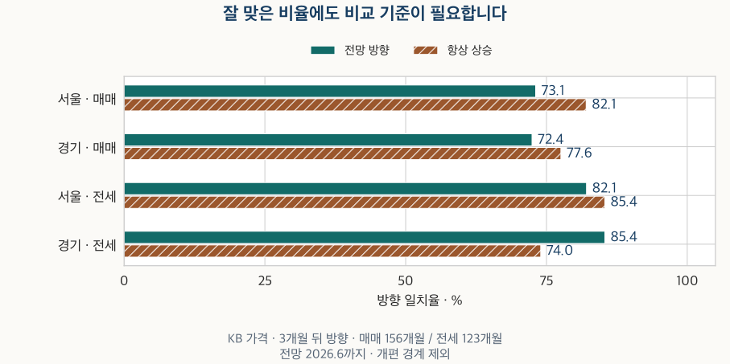
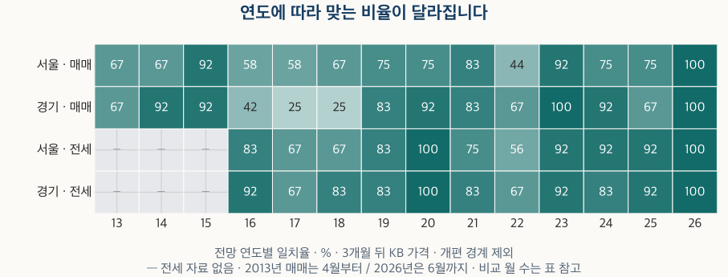

시장 심리 읽기 · 가격전망지수
KB 전망지수는 3개월 뒤 집값을 맞혔을까? 매매·전세 방향 비교
서울·경기의 KB 매매·전세 전망을 3개월 뒤 가격 방향과 대조합니다. 항상 상승·직전 추세 가정, 연도별 반례, 공표 시점과 자체 지수의 차이를 함께 확인합니다.
분석 기간 · 매매 전망 2013.4·전세 2016.1~2026.6 · KB 결과 2026.9까지 | 자료 기준일 · 2026-10-04
“KB 전망지수가 100을 넘었다”는 기사를 보면, 앞으로 집값이 오를 가능성도 그만큼 높아졌는지 궁금해집니다. 서울·경기의 과거 전망을 3개월 뒤 KB 아파트 가격 방향과 비교하니, 전체 일치율은 약 72~85%였지만 무엇과 비교하느냐에 따라 평가가 달라졌습니다.
KB 전망지수가 100을 넘으면 상승 확률이 100%인가요?
아닙니다. 전망지수는 표본 중개업소가 앞으로의 가격 방향에 답한 비중을 가중해 만든 숫자입니다. KB의 설명은 2~3개월 뒤의 방향을 묻는 지표라고 안내합니다. 100은 확률이 아니라 상승 쪽과 하락 쪽의 가중 응답이 균형을 이루는 기준입니다.
전망지수 = 100 + 상승 비중 + 0.5 × 약상승 비중 − 0.5 × 약하락 비중 − 하락 비중
비중은 % 단위입니다. 보통 응답의 가중치는 0이지만 전체 응답의 일부로 남습니다. 따라서 100을 넘었다고 응답자의 과반이 상승을 택했거나, 특정 아파트가 오를 확률이 그 숫자만큼 된다는 뜻은 아닙니다.
매매가격전망지수와 전세가격전망지수는 서로 다른 시장에 대한 답입니다. 다음 과거 사례처럼 보통 응답이 얼마나 많은지도 함께 봐야 합니다. 100 미만은 ‘가격이 내렸음’이 아니라 하락 쪽 가중 전망이 우세했음을 뜻합니다.
| 시장 | 상승 | 약상승 | 보통 | 약하락 | 하락 | 전망지수 |
|---|---|---|---|---|---|---|
| 서울 · 매매 | 0.10 | 5.92 | 73.35 | 20.36 | 0.28 | 92.60 |
| 경기 · 매매 | 0.00 | 7.21 | 71.41 | 21.08 | 0.30 | 92.76 |
| 서울 · 전세 | 0.70 | 31.04 | 58.42 | 9.55 | 0.28 | 111.17 |
| 경기 · 전세 | 0.30 | 28.05 | 63.24 | 8.41 | 0.00 | 110.12 |
이 글의 ‘상승 전망’과 ‘하락 전망’은 각각 100 초과와 미만을 줄여 부른 것입니다. 표에 보이는 반올림 값이 아니라 보유한 공표값으로 방향을 나눴습니다. 현재 거래 여건을 묻는 매수우위지수의 100과도 질문이 다릅니다.
3개월 뒤 집값 방향은 얼마나 맞았나요?
매매는 서울 73.1%·경기 72.4%, 전세는 서울 82.1%·경기 85.4%였습니다. 비교 대상 가격은 같은 지역의 KB 월간 아파트 가격지수입니다. 개별 집의 실제 체결금액이나 투자 수익률이 아닙니다.
전망을 낸 달을 t라고 하면, 가격 변화는 ‘t+3월 지수 ÷ t월 지수 − 1’입니다. 예를 들어 1월 전망에는 1월에서 4월까지의 방향을 붙입니다. 전망은 100, 가격 변화는 0을 기준으로 상승·보합·하락을 나눴습니다. 2026년 9월 가격까지 있어 주 비교의 마지막 전망은 6월입니다.
KB가 안내한 2022년 11월 통계개편의 경계를 가로지르는 2022년 8~10월 전망은 주 비교에서 뺐습니다. 그 세 달을 포함한 결과도 뒤에 남겼습니다. 이 제외는 개편이 가격 변화의 원인이었다는 판단이 아닙니다.
| 시장 | 비교 월 | 전망 일치 / 비교 월 · 비율 | 항상 상승 일치 / 같은 월 · 비율 |
|---|---|---|---|
| 서울 · 매매 | 156 | 114 / 156 · 73.1% | 128 / 156 · 82.1% |
| 경기 · 매매 | 156 | 113 / 156 · 72.4% | 121 / 156 · 77.6% |
| 서울 · 전세 | 123 | 101 / 123 · 82.1% | 105 / 123 · 85.4% |
| 경기 · 전세 | 123 | 105 / 123 · 85.4% | 91 / 123 · 74.0% |

매달 상승이라고만 답하는 가정도 상승이 많은 기간에는 높은 점수를 얻습니다. 서울 매매에서 전망의 73.1%만 보면 좋아 보이지만, 같은 달의 항상 상승 가정은 82.1%입니다. 경기 전세는 반대입니다. 전망은 85.4%, 항상 상승은 74.0%로 전망이 더 잘 맞았습니다.
조금 더 까다로운 비교는 직전 3개월의 가격 방향이 그대로 이어진다고 가정하는 것입니다. 이때 과거 3개월도 개편 경계를 넘으면 제외합니다. 분모가 매매 153개월·전세 120개월로 달라지므로, 아래 표의 같은 달끼리 비교해야 합니다.
| 시장 | 공통 비교 월 | 전망 일치 / 공통 월 · 비율 | 직전 추세 일치 / 공통 월 · 비율 |
|---|---|---|---|
| 서울 · 매매 | 153 | 111 / 153 · 72.5% | 127 / 153 · 83.0% |
| 경기 · 매매 | 153 | 110 / 153 · 71.9% | 126 / 153 · 82.4% |
| 서울 · 전세 | 120 | 98 / 120 · 81.7% | 105 / 120 · 87.5% |
| 경기 · 전세 | 120 | 102 / 120 · 85.0% | 106 / 120 · 88.3% |
네 시장 모두 이 전체 공통 기간에서는 직전 추세 가정의 방향 일치가 전망보다 많았습니다. 그렇다고 전망에 추가 정보가 전혀 없었다고 결론 내릴 수는 없습니다. 뒤에서 보듯 기간을 나누면 순서가 바뀝니다.
상승 전망과 하락 전망의 결과가 같았나요?
같지 않았습니다. 상승 전망이 나온 달은 실제 상승과 자주 맞았지만, 하락 전망 뒤에도 가격이 오른 달이 적지 않았습니다. 상승 전망만 골라 전체 지수의 정확도로 소개하면 이 차이를 놓칩니다.
| 시장 | 전망 방향 | 해당 월 | 실제 하락 | 실제 보합 | 실제 상승 | 전망 일치 / 해당 월 · 비율 |
|---|---|---|---|---|---|---|
| 서울 · 매매 | 하락 | 64 | 25 | 0 | 39 | 25 / 64 · 39.1% |
| 서울 · 매매 | 보합 | 0 | 0 | 0 | 0 | — |
| 서울 · 매매 | 상승 | 92 | 3 | 0 | 89 | 89 / 92 · 96.7% |
| 경기 · 매매 | 하락 | 74 | 33 | 0 | 41 | 33 / 74 · 44.6% |
| 경기 · 매매 | 보합 | 0 | 0 | 0 | 0 | — |
| 경기 · 매매 | 상승 | 82 | 2 | 0 | 80 | 80 / 82 · 97.6% |
| 서울 · 전세 | 하락 | 38 | 17 | 0 | 21 | 17 / 38 · 44.7% |
| 서울 · 전세 | 보합 | 0 | 0 | 0 | 0 | — |
| 서울 · 전세 | 상승 | 85 | 1 | 0 | 84 | 84 / 85 · 98.8% |
| 경기 · 전세 | 하락 | 48 | 31 | 0 | 17 | 31 / 48 · 64.6% |
| 경기 · 전세 | 보합 | 0 | 0 | 0 | 0 | — |
| 경기 · 전세 | 상승 | 75 | 1 | 0 | 74 | 74 / 75 · 98.7% |
서울 매매에서 상승 전망은 92개월 중 89개월이 실제 상승과 맞았습니다. 하락 전망은 64개월 중 25개월만 하락과 맞았고, 나머지 39개월은 가격이 올랐습니다. 경기 전세의 하락 전망은 48개월 중 31개월이 하락과 맞았습니다. 같은 100 기준도 시장에 따라 결과가 다릅니다.
이 비율은 선택한 과거 달의 결과입니다. 예를 들어 89/92를 앞으로 상승 전망이 나올 때의 상승 확률로 그대로 사용할 수는 없습니다. 시장 환경과 기간, 응답 표본이 바뀔 수 있습니다. 이 주 비교에서는 전망이 정확히 100인 달과 실제 변화가 정확히 0인 달이 없었지만, 표에서는 보합의 자리도 남겼습니다.
전체 점수가 낮아도 잘 맞은 시기는 있었나요?
있었습니다. ‘단순 가정보다 못하니 쓸모없다’는 해석에 대한 가장 강한 반론입니다. 2022년 11월 이후의 매매 전망은 서울 44개월 중 37개월, 경기 44개월 중 39개월이 맞았습니다.
| 시장 | 전망 기간 | 비교 월 | 전망 일치 | 항상 상승 일치 | 추세 공통 월 | 공통 월의 전망 일치 | 공통 월의 추세 일치 |
|---|---|---|---|---|---|---|---|
| 서울 · 매매 | 2022.10 이전 | 112 | 77 / 112 · 68.8% | 98 / 112 · 87.5% | 112 | 77 / 112 · 68.8% | 95 / 112 · 84.8% |
| 서울 · 매매 | 2022.11 이후 | 44 | 37 / 44 · 84.1% | 30 / 44 · 68.2% | 41 | 34 / 41 · 82.9% | 32 / 41 · 78.0% |
| 경기 · 매매 | 2022.10 이전 | 112 | 74 / 112 · 66.1% | 96 / 112 · 85.7% | 112 | 74 / 112 · 66.1% | 100 / 112 · 89.3% |
| 경기 · 매매 | 2022.11 이후 | 44 | 39 / 44 · 88.6% | 25 / 44 · 56.8% | 41 | 36 / 41 · 87.8% | 26 / 41 · 63.4% |
| 서울 · 전세 | 2022.10 이전 | 79 | 60 / 79 · 75.9% | 68 / 79 · 86.1% | 79 | 60 / 79 · 75.9% | 67 / 79 · 84.8% |
| 서울 · 전세 | 2022.11 이후 | 44 | 41 / 44 · 93.2% | 37 / 44 · 84.1% | 41 | 38 / 41 · 92.7% | 38 / 41 · 92.7% |
| 경기 · 전세 | 2022.10 이전 | 79 | 65 / 79 · 82.3% | 54 / 79 · 68.4% | 79 | 65 / 79 · 82.3% | 68 / 79 · 86.1% |
| 경기 · 전세 | 2022.11 이후 | 44 | 40 / 44 · 90.9% | 37 / 44 · 84.1% | 41 | 37 / 41 · 90.2% | 38 / 41 · 92.7% |
이후 구간에서 직전 추세와 비교할 수 있는 41개월만 맞춰도 서울은 전망 34개월·추세 32개월, 경기는 전망 36개월·추세 26개월이 맞았습니다. 전체 장기 비교와 다른 결과입니다. 전망이 특정 국면에서 더 유용한 정보를 담았을 가능성을 인정해야 합니다.
다만 개편 전후에는 시장 상황과 기간 길이도 함께 달라졌습니다. 개편 덕분에 성능이 좋아졌다고 분리해 설명할 수는 없습니다. 개별 연도까지 같은 규칙으로 나눠 보면 잘 맞은 해와 그렇지 않은 해가 모두 나타납니다.

| 연도 | 서울 · 매매 · 일치/비교 월 | 경기 · 매매 · 일치/비교 월 | 서울 · 전세 · 일치/비교 월 | 경기 · 전세 · 일치/비교 월 |
|---|---|---|---|---|
| 2013 | 6 / 9 · 66.7% | 6 / 9 · 66.7% | — | — |
| 2014 | 8 / 12 · 66.7% | 11 / 12 · 91.7% | — | — |
| 2015 | 11 / 12 · 91.7% | 11 / 12 · 91.7% | — | — |
| 2016 | 7 / 12 · 58.3% | 5 / 12 · 41.7% | 10 / 12 · 83.3% | 11 / 12 · 91.7% |
| 2017 | 7 / 12 · 58.3% | 3 / 12 · 25.0% | 8 / 12 · 66.7% | 8 / 12 · 66.7% |
| 2018 | 8 / 12 · 66.7% | 3 / 12 · 25.0% | 8 / 12 · 66.7% | 10 / 12 · 83.3% |
| 2019 | 9 / 12 · 75.0% | 10 / 12 · 83.3% | 10 / 12 · 83.3% | 10 / 12 · 83.3% |
| 2020 | 9 / 12 · 75.0% | 11 / 12 · 91.7% | 12 / 12 · 100.0% | 12 / 12 · 100.0% |
| 2021 | 10 / 12 · 83.3% | 10 / 12 · 83.3% | 9 / 12 · 75.0% | 10 / 12 · 83.3% |
| 2022 | 4 / 9 · 44.4% | 6 / 9 · 66.7% | 5 / 9 · 55.6% | 6 / 9 · 66.7% |
| 2023 | 11 / 12 · 91.7% | 12 / 12 · 100.0% | 11 / 12 · 91.7% | 11 / 12 · 91.7% |
| 2024 | 9 / 12 · 75.0% | 11 / 12 · 91.7% | 11 / 12 · 91.7% | 10 / 12 · 83.3% |
| 2025 | 9 / 12 · 75.0% | 8 / 12 · 66.7% | 11 / 12 · 91.7% | 11 / 12 · 91.7% |
| 2026 | 6 / 6 · 100.0% | 6 / 6 · 100.0% | 6 / 6 · 100.0% | 6 / 6 · 100.0% |
2023년 경기 매매의 12/12는 실제로 관측된 결과입니다. 그러나 1월→4월과 2월→5월은 관측 기간이 겹칩니다. 서로 독립인 12번의 시험에서 완벽했다고 읽으면 안 됩니다. 한 해의 높은 점수만으로 다음 해나 다른 지역의 우월성을 보장할 수도 없습니다. 전체 월별 판정은 글 끝의 원표에 남겼습니다.
기간이나 가격 자료를 바꿔도 결과가 유지되나요?
일치율의 크기와 비교 순서가 달라집니다. 먼저 전망 95~105와 가격 변화 ±0.1%를 보합 범위로 넓히면, 주 3개월 일치율은 서울·경기 매매 60.3%·60.9%, 전세 70.7%·69.1%가 됩니다. 기준을 바꾸면 어떤 움직임을 맞혔다고 부를지도 달라집니다.
전망에는 2~3개월이라는 시간 범위가 있으므로 2개월 뒤도 비교했습니다. 조사 기준일은 매월 15일이 포함된 주의 월요일이고 공표는 월말이나 다음 달 초이므로, 전망월 다음 달부터 3개월 동안의 가격 변화도 별도로 계산했습니다. 이 공표 시점 정렬 보조의 일치율은 서울·경기 매매 69.7%·69.0%, 전세 77.0%·82.0%입니다. 실제 발표일에 그 가격으로 거래할 수 있었다는 뜻은 아닙니다.
이미 공개한 같은 주택의 매매·전세 비교 지수로도 대조했습니다. 두 시장 모두 같은 주택을 유지한 자체 모형의 연구 비교이며, KB 가격이나 현행 대시보드 지수를 그대로 복제한 것이 아닙니다. 이 지수는 2026년 6월까지이므로 평가 가능한 마지막 전망은 3월입니다. 표의 KB 결과도 같은 전망월로 맞췄습니다.
| 시장 | 비교 월 | 표시값 방향 일치 | 가능한 일치 건수 범위 | 방향 미확정 월 | 같은 월 KB 일치 | 추세 공통 월의 전망 일치 | 추세 공통 월의 추세 일치 |
|---|---|---|---|---|---|---|---|
| 서울 · 매매 | 153 | 112 / 153 · 73.2% | 107~118 / 153 | 17 | 111 / 153 · 72.5% | 109 / 150 · 72.7% | 107 / 150 · 71.3% |
| 수집 경기 · 매매 | 153 | 116 / 153 · 75.8% | 106~119 / 153 | 18 | 110 / 153 · 71.9% | 113 / 150 · 75.3% | 99 / 150 · 66.0% |
| 서울 · 전세 | 120 | 93 / 120 · 77.5% | 92~95 / 120 | 7 | 98 / 120 · 81.7% | 90 / 117 · 76.9% | 90 / 117 · 76.9% |
| 수집 경기 · 전세 | 120 | 98 / 120 · 81.7% | 96~99 / 120 | 5 | 102 / 120 · 85.0% | 95 / 117 · 81.2% | 95 / 117 · 81.2% |
자체 지수의 표시값 기준으로 수집 경기 매매 전망은 직전 추세보다 잘 맞았습니다. 하지만 자체 지수는 현재 남은 주택의 가격을 과거로 비교하고, 일부 오래된 가격과 같은 단지의 가까운 면적 가격을 활용합니다. 포함률도 현재 알려진 주택 수 대비 서울 30~40%, 수집 경기 20~30% 범위이며, 경기 전체를 대표하지 않습니다. 이런 차이가 있는 비교를 한쪽 지표의 승리로 정리할 수는 없습니다.
공개된 자체 지수는 소수 첫째 자리까지입니다. 반올림 전에는 어느 쪽이 더 컸는지 확정하지 못하는 달이 서울·수집 경기 매매 17·18개월, 전세 7·5개월 있습니다. 표의 ‘가능한 일치 건수 범위’는 지수마다 ±0.05의 반올림 범위를 적용한 보수적인 한계입니다. 통계적 신뢰구간이 아니며, 전기간 정상적인 가격만으로 같은 비교를 할 수 없었다는 한계도 남습니다.
아래에는 2개월·3개월, 공표 시점 정렬, 중립 구간, 시작 기간과 개편 경계의 포함 여부를 정해 둔 규칙대로 모두 비교했습니다. 자체 지수 표는 표시값 방향 기준이므로 반올림 미확정 달까지 확실히 맞혔다고 해석하지 않습니다.
KB 아파트 가격 · 기간·공표 정렬·중립 구간 전체 비교
| 시장 | 가격 비교 월 | 전망 / 가격 중립 | 비교 월 | 전망 일치 | 항상 상승 일치 | 추세 공통 월 | 공통 월 전망 일치 | 공통 월 추세 일치 |
|---|---|---|---|---|---|---|---|---|
| 서울 · 매매 | t+0 → t+3 | 100 / 0% | 156 | 114 / 156 · 73.1% | 128 / 156 · 82.1% | 153 | 111 / 153 · 72.5% | 127 / 153 · 83.0% |
| 서울 · 매매 | t+0 → t+3 | 95~105 / ±0.1% | 156 | 94 / 156 · 60.3% | 125 / 156 · 80.1% | 153 | 91 / 153 · 59.5% | 121 / 153 · 79.1% |
| 서울 · 매매 | t+0 → t+2 | 100 / 0% | 158 | 117 / 158 · 74.1% | 130 / 158 · 82.3% | 155 | 114 / 155 · 73.5% | 131 / 155 · 84.5% |
| 서울 · 매매 | t+0 → t+2 | 95~105 / ±0.1% | 158 | 102 / 158 · 64.6% | 122 / 158 · 77.2% | 155 | 99 / 155 · 63.9% | 127 / 155 · 81.9% |
| 서울 · 매매 | t+1 → t+4 | 100 / 0% | 155 | 108 / 155 · 69.7% | 128 / 155 · 82.6% | 152 | 105 / 152 · 69.1% | 122 / 152 · 80.3% |
| 서울 · 매매 | t+1 → t+4 | 95~105 / ±0.1% | 155 | 91 / 155 · 58.7% | 125 / 155 · 80.6% | 152 | 88 / 152 · 57.9% | 115 / 152 · 75.7% |
| 서울 · 매매 | t+1 → t+3 | 100 / 0% | 157 | 111 / 157 · 70.7% | 130 / 157 · 82.8% | 154 | 108 / 154 · 70.1% | 126 / 154 · 81.8% |
| 서울 · 매매 | t+1 → t+3 | 95~105 / ±0.1% | 157 | 94 / 157 · 59.9% | 122 / 157 · 77.7% | 154 | 91 / 154 · 59.1% | 119 / 154 · 77.3% |
| 경기 · 매매 | t+0 → t+3 | 100 / 0% | 156 | 113 / 156 · 72.4% | 121 / 156 · 77.6% | 153 | 110 / 153 · 71.9% | 126 / 153 · 82.4% |
| 경기 · 매매 | t+0 → t+3 | 95~105 / ±0.1% | 156 | 95 / 156 · 60.9% | 116 / 156 · 74.4% | 153 | 92 / 153 · 60.1% | 115 / 153 · 75.2% |
| 경기 · 매매 | t+0 → t+2 | 100 / 0% | 158 | 113 / 158 · 71.5% | 122 / 158 · 77.2% | 155 | 110 / 155 · 71.0% | 134 / 155 · 86.5% |
| 경기 · 매매 | t+0 → t+2 | 95~105 / ±0.1% | 158 | 101 / 158 · 63.9% | 111 / 158 · 70.3% | 155 | 98 / 155 · 63.2% | 115 / 155 · 74.2% |
| 경기 · 매매 | t+1 → t+4 | 100 / 0% | 155 | 107 / 155 · 69.0% | 121 / 155 · 78.1% | 152 | 104 / 152 · 68.4% | 116 / 152 · 76.3% |
| 경기 · 매매 | t+1 → t+4 | 95~105 / ±0.1% | 155 | 87 / 155 · 56.1% | 116 / 155 · 74.8% | 152 | 84 / 152 · 55.3% | 108 / 152 · 71.1% |
| 경기 · 매매 | t+1 → t+3 | 100 / 0% | 157 | 113 / 157 · 72.0% | 122 / 157 · 77.7% | 154 | 110 / 154 · 71.4% | 124 / 154 · 80.5% |
| 경기 · 매매 | t+1 → t+3 | 95~105 / ±0.1% | 157 | 90 / 157 · 57.3% | 111 / 157 · 70.7% | 154 | 87 / 154 · 56.5% | 107 / 154 · 69.5% |
| 서울 · 전세 | t+0 → t+3 | 100 / 0% | 123 | 101 / 123 · 82.1% | 105 / 123 · 85.4% | 120 | 98 / 120 · 81.7% | 105 / 120 · 87.5% |
| 서울 · 전세 | t+0 → t+3 | 95~105 / ±0.1% | 123 | 87 / 123 · 70.7% | 102 / 123 · 82.9% | 120 | 84 / 120 · 70.0% | 101 / 120 · 84.2% |
| 서울 · 전세 | t+0 → t+2 | 100 / 0% | 125 | 107 / 125 · 85.6% | 104 / 125 · 83.2% | 122 | 104 / 122 · 85.2% | 108 / 122 · 88.5% |
| 서울 · 전세 | t+0 → t+2 | 95~105 / ±0.1% | 125 | 91 / 125 · 72.8% | 99 / 125 · 79.2% | 122 | 88 / 122 · 72.1% | 102 / 122 · 83.6% |
| 서울 · 전세 | t+1 → t+4 | 100 / 0% | 122 | 94 / 122 · 77.0% | 104 / 122 · 85.2% | 119 | 91 / 119 · 76.5% | 101 / 119 · 84.9% |
| 서울 · 전세 | t+1 → t+4 | 95~105 / ±0.1% | 122 | 85 / 122 · 69.7% | 101 / 122 · 82.8% | 119 | 82 / 119 · 68.9% | 97 / 119 · 81.5% |
| 서울 · 전세 | t+1 → t+3 | 100 / 0% | 124 | 100 / 124 · 80.6% | 103 / 124 · 83.1% | 121 | 97 / 121 · 80.2% | 104 / 121 · 86.0% |
| 서울 · 전세 | t+1 → t+3 | 95~105 / ±0.1% | 124 | 87 / 124 · 70.2% | 98 / 124 · 79.0% | 121 | 84 / 121 · 69.4% | 96 / 121 · 79.3% |
| 경기 · 전세 | t+0 → t+3 | 100 / 0% | 123 | 105 / 123 · 85.4% | 91 / 123 · 74.0% | 120 | 102 / 120 · 85.0% | 106 / 120 · 88.3% |
| 경기 · 전세 | t+0 → t+3 | 95~105 / ±0.1% | 123 | 85 / 123 · 69.1% | 88 / 123 · 71.5% | 120 | 82 / 120 · 68.3% | 97 / 120 · 80.8% |
| 경기 · 전세 | t+0 → t+2 | 100 / 0% | 125 | 105 / 125 · 84.0% | 94 / 125 · 75.2% | 122 | 102 / 122 · 83.6% | 110 / 122 · 90.2% |
| 경기 · 전세 | t+0 → t+2 | 95~105 / ±0.1% | 125 | 94 / 125 · 75.2% | 85 / 125 · 68.0% | 122 | 91 / 122 · 74.6% | 98 / 122 · 80.3% |
| 경기 · 전세 | t+1 → t+4 | 100 / 0% | 122 | 100 / 122 · 82.0% | 90 / 122 · 73.8% | 119 | 97 / 119 · 81.5% | 102 / 119 · 85.7% |
| 경기 · 전세 | t+1 → t+4 | 95~105 / ±0.1% | 122 | 81 / 122 · 66.4% | 87 / 122 · 71.3% | 119 | 78 / 119 · 65.5% | 93 / 119 · 78.2% |
| 경기 · 전세 | t+1 → t+3 | 100 / 0% | 124 | 104 / 124 · 83.9% | 93 / 124 · 75.0% | 121 | 101 / 121 · 83.5% | 105 / 121 · 86.8% |
| 경기 · 전세 | t+1 → t+3 | 95~105 / ±0.1% | 124 | 89 / 124 · 71.8% | 84 / 124 · 67.7% | 121 | 86 / 121 · 71.1% | 91 / 121 · 75.2% |
자체 공개 지수 · 기간·공표 정렬·중립 구간 전체 비교
| 시장 | 가격 비교 월 | 전망 / 가격 중립 | 비교 월 | 전망 일치 | 항상 상승 일치 | 추세 공통 월 | 공통 월 전망 일치 | 공통 월 추세 일치 |
|---|---|---|---|---|---|---|---|---|
| 서울 · 매매 | t+0 → t+3 | 100 / 0% | 153 | 112 / 153 · 73.2% | 119 / 153 · 77.8% | 150 | 109 / 150 · 72.7% | 107 / 150 · 71.3% |
| 서울 · 매매 | t+0 → t+3 | 95~105 / ±0.1% | 153 | 99 / 153 · 64.7% | 119 / 153 · 77.8% | 150 | 96 / 150 · 64.0% | 107 / 150 · 71.3% |
| 서울 · 매매 | t+0 → t+2 | 100 / 0% | 155 | 118 / 155 · 76.1% | 121 / 155 · 78.1% | 152 | 115 / 152 · 75.7% | 110 / 152 · 72.4% |
| 서울 · 매매 | t+0 → t+2 | 95~105 / ±0.1% | 155 | 103 / 155 · 66.5% | 121 / 155 · 78.1% | 152 | 100 / 152 · 65.8% | 110 / 152 · 72.4% |
| 서울 · 매매 | t+1 → t+4 | 100 / 0% | 152 | 102 / 152 · 67.1% | 119 / 152 · 78.3% | 149 | 99 / 149 · 66.4% | 103 / 149 · 69.1% |
| 서울 · 매매 | t+1 → t+4 | 95~105 / ±0.1% | 152 | 87 / 152 · 57.2% | 119 / 152 · 78.3% | 149 | 84 / 149 · 56.4% | 103 / 149 · 69.1% |
| 서울 · 매매 | t+1 → t+3 | 100 / 0% | 154 | 108 / 154 · 70.1% | 120 / 154 · 77.9% | 151 | 105 / 151 · 69.5% | 106 / 151 · 70.2% |
| 서울 · 매매 | t+1 → t+3 | 95~105 / ±0.1% | 154 | 92 / 154 · 59.7% | 120 / 154 · 77.9% | 151 | 89 / 151 · 58.9% | 106 / 151 · 70.2% |
| 수집 경기 · 매매 | t+0 → t+3 | 100 / 0% | 153 | 116 / 153 · 75.8% | 106 / 153 · 69.3% | 150 | 113 / 150 · 75.3% | 99 / 150 · 66.0% |
| 수집 경기 · 매매 | t+0 → t+3 | 95~105 / ±0.1% | 153 | 98 / 153 · 64.1% | 106 / 153 · 69.3% | 150 | 95 / 150 · 63.3% | 96 / 150 · 64.0% |
| 수집 경기 · 매매 | t+0 → t+2 | 100 / 0% | 155 | 122 / 155 · 78.7% | 102 / 155 · 65.8% | 152 | 119 / 152 · 78.3% | 99 / 152 · 65.1% |
| 수집 경기 · 매매 | t+0 → t+2 | 95~105 / ±0.1% | 155 | 106 / 155 · 68.4% | 102 / 155 · 65.8% | 152 | 103 / 152 · 67.8% | 97 / 152 · 63.8% |
| 수집 경기 · 매매 | t+1 → t+4 | 100 / 0% | 152 | 108 / 152 · 71.1% | 106 / 152 · 69.7% | 149 | 105 / 149 · 70.5% | 89 / 149 · 59.7% |
| 수집 경기 · 매매 | t+1 → t+4 | 95~105 / ±0.1% | 152 | 87 / 152 · 57.2% | 106 / 152 · 69.7% | 149 | 84 / 149 · 56.4% | 87 / 149 · 58.4% |
| 수집 경기 · 매매 | t+1 → t+3 | 100 / 0% | 154 | 109 / 154 · 70.8% | 101 / 154 · 65.6% | 151 | 106 / 151 · 70.2% | 90 / 151 · 59.6% |
| 수집 경기 · 매매 | t+1 → t+3 | 95~105 / ±0.1% | 154 | 92 / 154 · 59.7% | 101 / 154 · 65.6% | 151 | 89 / 151 · 58.9% | 88 / 151 · 58.3% |
| 서울 · 전세 | t+0 → t+3 | 100 / 0% | 120 | 93 / 120 · 77.5% | 98 / 120 · 81.7% | 117 | 90 / 117 · 76.9% | 90 / 117 · 76.9% |
| 서울 · 전세 | t+0 → t+3 | 95~105 / ±0.1% | 120 | 81 / 120 · 67.5% | 97 / 120 · 80.8% | 117 | 78 / 117 · 66.7% | 88 / 117 · 75.2% |
| 서울 · 전세 | t+0 → t+2 | 100 / 0% | 122 | 101 / 122 · 82.8% | 96 / 122 · 78.7% | 119 | 98 / 119 · 82.4% | 93 / 119 · 78.2% |
| 서울 · 전세 | t+0 → t+2 | 95~105 / ±0.1% | 122 | 88 / 122 · 72.1% | 95 / 122 · 77.9% | 119 | 85 / 119 · 71.4% | 91 / 119 · 76.5% |
| 서울 · 전세 | t+1 → t+4 | 100 / 0% | 119 | 86 / 119 · 72.3% | 97 / 119 · 81.5% | 116 | 83 / 116 · 71.6% | 84 / 116 · 72.4% |
| 서울 · 전세 | t+1 → t+4 | 95~105 / ±0.1% | 119 | 76 / 119 · 63.9% | 96 / 119 · 80.7% | 116 | 73 / 116 · 62.9% | 83 / 116 · 71.6% |
| 서울 · 전세 | t+1 → t+3 | 100 / 0% | 121 | 92 / 121 · 76.0% | 95 / 121 · 78.5% | 118 | 89 / 118 · 75.4% | 86 / 118 · 72.9% |
| 서울 · 전세 | t+1 → t+3 | 95~105 / ±0.1% | 121 | 82 / 121 · 67.8% | 94 / 121 · 77.7% | 118 | 79 / 118 · 66.9% | 85 / 118 · 72.0% |
| 수집 경기 · 전세 | t+0 → t+3 | 100 / 0% | 120 | 98 / 120 · 81.7% | 87 / 120 · 72.5% | 117 | 95 / 117 · 81.2% | 95 / 117 · 81.2% |
| 수집 경기 · 전세 | t+0 → t+3 | 95~105 / ±0.1% | 120 | 76 / 120 · 63.3% | 87 / 120 · 72.5% | 117 | 73 / 117 · 62.4% | 95 / 117 · 81.2% |
| 수집 경기 · 전세 | t+0 → t+2 | 100 / 0% | 122 | 103 / 122 · 84.4% | 90 / 122 · 73.8% | 119 | 100 / 119 · 84.0% | 100 / 119 · 84.0% |
| 수집 경기 · 전세 | t+0 → t+2 | 95~105 / ±0.1% | 122 | 81 / 122 · 66.4% | 90 / 122 · 73.8% | 119 | 78 / 119 · 65.5% | 100 / 119 · 84.0% |
| 수집 경기 · 전세 | t+1 → t+4 | 100 / 0% | 119 | 91 / 119 · 76.5% | 86 / 119 · 72.3% | 116 | 88 / 116 · 75.9% | 91 / 116 · 78.4% |
| 수집 경기 · 전세 | t+1 → t+4 | 95~105 / ±0.1% | 119 | 71 / 119 · 59.7% | 86 / 119 · 72.3% | 116 | 68 / 116 · 58.6% | 91 / 116 · 78.4% |
| 수집 경기 · 전세 | t+1 → t+3 | 100 / 0% | 121 | 98 / 121 · 81.0% | 89 / 121 · 73.6% | 118 | 95 / 118 · 80.5% | 95 / 118 · 80.5% |
| 수집 경기 · 전세 | t+1 → t+3 | 95~105 / ±0.1% | 121 | 76 / 121 · 62.8% | 89 / 121 · 73.6% | 118 | 73 / 118 · 61.9% | 95 / 118 · 80.5% |
시작 기간과 개편 경계 포함 여부 비교
| 시장 | 비교 범위 | 비교 월 | 전망 일치 | 항상 상승 일치 |
|---|---|---|---|---|
| 서울 · 매매 | 개편 경계 포함 | 159 | 117 / 159 · 73.6% | 128 / 159 · 80.5% |
| 서울 · 매매 | 공통 2016년 이후 | 123 | 89 / 123 · 72.4% | 102 / 123 · 82.9% |
| 서울 · 매매 | 자체 지수와 같은 전망월 | 153 | 111 / 153 · 72.5% | 125 / 153 · 81.7% |
| 경기 · 매매 | 개편 경계 포함 | 159 | 116 / 159 · 73.0% | 121 / 159 · 76.1% |
| 경기 · 매매 | 공통 2016년 이후 | 123 | 85 / 123 · 69.1% | 92 / 123 · 74.8% |
| 경기 · 매매 | 자체 지수와 같은 전망월 | 153 | 110 / 153 · 71.9% | 118 / 153 · 77.1% |
| 서울 · 전세 | 개편 경계 포함 | 126 | 104 / 126 · 82.5% | 105 / 126 · 83.3% |
| 서울 · 전세 | 공통 2016년 이후 | 123 | 101 / 123 · 82.1% | 105 / 123 · 85.4% |
| 서울 · 전세 | 자체 지수와 같은 전망월 | 120 | 98 / 120 · 81.7% | 102 / 120 · 85.0% |
| 경기 · 전세 | 개편 경계 포함 | 126 | 108 / 126 · 85.7% | 91 / 126 · 72.2% |
| 경기 · 전세 | 공통 2016년 이후 | 123 | 105 / 123 · 85.4% | 91 / 123 · 74.0% |
| 경기 · 전세 | 자체 지수와 같은 전망월 | 120 | 102 / 120 · 85.0% | 88 / 120 · 73.3% |
현재 수급 응답과 미래 전망을 구분하려면 전세수급지수와 실제 보증금의 동행도 함께 확인해 보세요. 같은 달 상관은 이 글의 미래 방향 평가와 다른 질문입니다.
전망지수 기사를 읽을 때 어떤 순서로 확인하나요?
- 질문과 기준을 확인합니다. 누가 답했는지, 매매인지 전세인지, 100이 무엇을 뜻하는지 먼저 봅니다.
- 전망월과 결과월을 적습니다. 현재 체감, 3개월 뒤 전망, 이미 발표된 가격 변화를 구분합니다. 미래 결과가 없는 달은 점수를 매기지 않습니다.
- 비교 기준을 붙입니다. 방향 일치율만 보지 말고 같은 달의 항상 상승 가정과 직전 추세도 확인합니다.
- 반대 결과를 찾습니다. 하락 전망 뒤 상승한 달, 전체와 다른 연도, 자료·중립 기준을 바꾸면 달라지는 결과를 함께 봅니다.
- 내 주택의 조건을 따로 확인합니다. 예산·상환 여력·거주 계획과 같은 면적의 실제 거래·현재 매물을 살핍니다. 광역 설문이 특정 집의 매수나 전세 계약 시점을 대신하지는 않습니다.
전망은 중개업소의 기대를 읽는 자료입니다. 기대가 실제 가격과 맞은 경험과 어긋난 경험을 함께 보면, 하나의 지수에 확신을 맡기는 일을 줄일 수 있습니다. 가격의 종류부터 구분하려면 실거래가·호가·지수·추정가격의 차이를 확인해 보세요.
전망 적중과 달리 관측월의 선후가 궁금하다면 매수우위지수와 가격의 시차·전환점 비교에서 같은 달과 한 달 뒤의 관계, 가격이 먼저였던 반례를 확인할 수 있습니다.
전체 월별 판정·계산 기준·자료 한계
매매 전망의 보유 범위는 2013년 4월~2026년 9월 162개월, 전세는 2016년 1월~2026년 9월 129개월입니다. 전세 2016년 1월을 공식 조사 최초 도입월로 확인한 것은 아닙니다. 앞선 2013~2015년 전세를 0이나 보합으로 채우지 않았습니다. KB 가격은 두 시장 모두 월간 아파트 지수이며 2026년 9월까지 사용했습니다.
공식 자료는 2026년 10월 3일 수집한 보유본입니다. 10월 12일 매매 전망의 162개월, 전세 전망의 공개된 최근 61개월 화면과 지정한 응답 비중을 대조했습니다. 전세 전기간 화면은 로그인이 필요해 전체 시작을 확인하지 못했습니다. 보유 원천과 기존 통계 자료의 수치는 별도로 대조했습니다. 전국 자료의 일부 응답 합계·산식 불일치를 서울·경기에 적용하거나 값을 보정하지 않았습니다.
주 비교의 전망월은 2026년 6월까지이며 개편 경계를 가로지르는 세 달을 제외합니다. 직전 추세는 전망월까지의 과거 3개월 변화로 계산하고, 그 기간도 개편을 가로지르면 공통 비교에서 제외합니다. 2개월 보조만 7월 전망까지 결과가 있습니다. 아래 주 3개월 표는 7~9월을 미관측으로 남기고 전망 값도 제시하지 않습니다.
전망·KB 가격의 방향은 공표 원천의 정밀도에서 분류합니다. 아래 지수와 변화율은 소수 둘째 자리로 표시하므로 100.00이나 0.00으로 보여도 원래 값은 경계와 다를 수 있습니다. 방향 칸은 반올림 전에 판정한 결과입니다. 자체 지수의 방향과 가능한 범위는 이미 공개한 소수 첫째 자리 값에서만 계산했습니다. 개인 거래·정확한 주택 수·추가 정밀도의 모형가격을 공개하지 않습니다.
맞은 달과 전체 달은 개편 제외 등 같은 조건으로 셌습니다. 상·하락의 확률 추정, 발표 당시 공개돼 있던 자료로 한 검증, 거래 비용을 포함한 수익률, 금리·공급·정책의 인과 효과는 계산하지 않았습니다. 2~3개월 창이 겹치므로 독립 표본으로 가정한 유의확률도 제시하지 않습니다. 현재 보유본은 과거 발표 시점의 값과 다를 수 있습니다.
자체 지수 자료 기준일은 2026년 10월 4일입니다. 같은 주택을 두 시장·186개월에 유지한 세대수 가중 비교이며, 알려진 시작 이후 건축 주택은 제외하고 건축연도 미상은 포함합니다. 매월 조사 월요일까지 완료된 목요일 가격을 사용합니다. 현재 남아 있는 재고만 보는 선택 편향, 오래된 가격과 다른 면적 가격의 활용, 모든 달을 정상 거래만으로 비교할 수 없다는 한계가 남습니다. 반올림 가능 범위는 월별 가능성을 합친 바깥 한계로, 모든 달에 동시에 실현되는 가장 좁은 범위는 아닙니다.
출처: KB 심리지수 설명, 앞서 연결한 매매·전세 전망 표와 KB 주택가격동향. 공개 비교 자료(JSON)에는 기간·기준별 전체 결과가 들어 있습니다. 출처 확인일 2026년 10월 12일.
분석·집필: 파파펭귄 (Nobot Kang). 에이전트로 공식 자료 대조·계산·편집 검토를 보조했습니다.
서울 · 매매 · 맞은 달과 다른 달 전체 162개월
| 전망월 | 전망지수 | 전망 방향 | KB 변화율 | KB 방향 | KB 판정 | 자체 변화율 | 자체 가능 방향 | 자체 판정 |
|---|---|---|---|---|---|---|---|---|
| 2013-04 | 104.19 | 상승 | -0.59 | 하락 | 불일치 | 0.00 | 하락·보합·상승 | 반올림 미확정 |
| 2013-05 | 105.54 | 상승 | -0.82 | 하락 | 불일치 | -0.28 | 하락·보합 | 반올림 미확정 |
| 2013-06 | 89.46 | 하락 | -0.67 | 하락 | 일치 | -0.28 | 하락·보합 | 반올림 미확정 |
| 2013-07 | 83.61 | 하락 | -0.24 | 하락 | 일치 | 1.13 | 상승 | 불일치 |
| 2013-08 | 87.62 | 하락 | 0.05 | 상승 | 불일치 | 1.42 | 상승 | 불일치 |
| 2013-09 | 111.48 | 상승 | 0.10 | 상승 | 일치 | 1.13 | 상승 | 일치 |
| 2013-10 | 109.32 | 상승 | 0.04 | 상승 | 일치 | 0.56 | 상승 | 일치 |
| 2013-11 | 100.87 | 상승 | 0.16 | 상승 | 일치 | 0.84 | 상승 | 일치 |
| 2013-12 | 101.14 | 상승 | 0.39 | 상승 | 일치 | 1.68 | 상승 | 일치 |
| 2014-01 | 110.92 | 상승 | 0.44 | 상승 | 일치 | 1.67 | 상승 | 일치 |
| 2014-02 | 117.52 | 상승 | 0.28 | 상승 | 일치 | 1.11 | 상승 | 일치 |
| 2014-03 | 113.07 | 상승 | -0.05 | 하락 | 불일치 | 0.00 | 하락·보합·상승 | 반올림 미확정 |
| 2014-04 | 96.57 | 하락 | -0.14 | 하락 | 일치 | -0.27 | 하락·보합 | 반올림 미확정 |
| 2014-05 | 93.47 | 하락 | -0.07 | 하락 | 일치 | 0.00 | 하락·보합·상승 | 반올림 미확정 |
| 2014-06 | 96.04 | 하락 | 0.33 | 상승 | 불일치 | 1.10 | 상승 | 불일치 |
| 2014-07 | 98.77 | 하락 | 0.63 | 상승 | 불일치 | 1.92 | 상승 | 불일치 |
| 2014-08 | 116.92 | 상승 | 0.70 | 상승 | 일치 | 2.19 | 상승 | 일치 |
| 2014-09 | 126.34 | 상승 | 0.41 | 상승 | 일치 | 1.36 | 상승 | 일치 |
| 2014-10 | 114.59 | 상승 | 0.20 | 상승 | 일치 | 0.81 | 상승 | 일치 |
| 2014-11 | 100.89 | 상승 | 0.29 | 상승 | 일치 | 0.54 | 상승 | 일치 |
| 2014-12 | 98.71 | 하락 | 0.75 | 상승 | 불일치 | 1.34 | 상승 | 불일치 |
| 2015-01 | 108.97 | 상승 | 1.22 | 상승 | 일치 | 2.41 | 상승 | 일치 |
| 2015-02 | 121.49 | 상승 | 1.42 | 상승 | 일치 | 2.67 | 상승 | 일치 |
| 2015-03 | 129.92 | 상승 | 1.44 | 상승 | 일치 | 2.91 | 상승 | 일치 |
| 2015-04 | 119.43 | 상승 | 1.36 | 상승 | 일치 | 2.35 | 상승 | 일치 |
| 2015-05 | 115.21 | 상승 | 1.52 | 상승 | 일치 | 2.86 | 상승 | 일치 |
| 2015-06 | 118.82 | 상승 | 1.76 | 상승 | 일치 | 2.83 | 상승 | 일치 |
| 2015-07 | 122.72 | 상승 | 1.79 | 상승 | 일치 | 3.06 | 상승 | 일치 |
| 2015-08 | 115.27 | 상승 | 1.92 | 상승 | 일치 | 2.78 | 상승 | 일치 |
| 2015-09 | 117.17 | 상승 | 1.50 | 상승 | 일치 | 2.25 | 상승 | 일치 |
| 2015-10 | 122.72 | 상승 | 1.11 | 상승 | 일치 | 0.99 | 상승 | 일치 |
| 2015-11 | 103.41 | 상승 | 0.58 | 상승 | 일치 | 0.00 | 하락·보합·상승 | 반올림 미확정 |
| 2015-12 | 92.01 | 하락 | 0.33 | 상승 | 불일치 | -0.24 | 하락·보합 | 반올림 미확정 |
| 2016-01 | 92.60 | 하락 | 0.34 | 상승 | 불일치 | 0.00 | 하락·보합·상승 | 반올림 미확정 |
| 2016-02 | 91.97 | 하락 | 0.47 | 상승 | 불일치 | 0.74 | 상승 | 불일치 |
| 2016-03 | 93.66 | 하락 | 0.80 | 상승 | 불일치 | 1.23 | 상승 | 불일치 |
| 2016-04 | 102.00 | 상승 | 1.23 | 상승 | 일치 | 2.45 | 상승 | 일치 |
| 2016-05 | 106.99 | 상승 | 1.51 | 상승 | 일치 | 3.66 | 상승 | 일치 |
| 2016-06 | 117.89 | 상승 | 1.55 | 상승 | 일치 | 4.60 | 상승 | 일치 |
| 2016-07 | 118.18 | 상승 | 1.72 | 상승 | 일치 | 4.78 | 상승 | 일치 |
| 2016-08 | 117.68 | 상승 | 1.82 | 상승 | 일치 | 4.24 | 상승 | 일치 |
| 2016-09 | 123.01 | 상승 | 1.48 | 상승 | 일치 | 2.78 | 상승 | 일치 |
| 2016-10 | 124.48 | 상승 | 0.79 | 상승 | 일치 | 1.14 | 상승 | 일치 |
| 2016-11 | 95.50 | 하락 | 0.17 | 상승 | 불일치 | -0.45 | 하락 | 일치 |
| 2016-12 | 86.76 | 하락 | 0.17 | 상승 | 불일치 | -0.45 | 하락 | 일치 |
| 2017-01 | 85.47 | 하락 | 0.28 | 상승 | 불일치 | 0.23 | 보합·상승 | 반올림 미확정 |
| 2017-02 | 90.25 | 하락 | 0.46 | 상승 | 불일치 | 1.59 | 상승 | 불일치 |
| 2017-03 | 98.14 | 하락 | 1.21 | 상승 | 불일치 | 3.39 | 상승 | 불일치 |
| 2017-04 | 103.06 | 상승 | 1.94 | 상승 | 일치 | 4.28 | 상승 | 일치 |
| 2017-05 | 114.24 | 상승 | 2.79 | 상승 | 일치 | 6.25 | 상승 | 일치 |
| 2017-06 | 118.17 | 상승 | 2.07 | 상승 | 일치 | 4.38 | 상승 | 일치 |
| 2017-07 | 120.19 | 상승 | 1.65 | 상승 | 일치 | 3.89 | 상승 | 일치 |
| 2017-08 | 86.76 | 하락 | 1.22 | 상승 | 불일치 | 2.31 | 상승 | 불일치 |
| 2017-09 | 92.31 | 하락 | 1.74 | 상승 | 불일치 | 2.94 | 상승 | 불일치 |
| 2017-10 | 104.64 | 상승 | 2.42 | 상승 | 일치 | 3.95 | 상승 | 일치 |
| 2017-11 | 102.69 | 상승 | 2.80 | 상승 | 일치 | 4.93 | 상승 | 일치 |
| 2017-12 | 105.85 | 상승 | 3.40 | 상승 | 일치 | 5.91 | 상승 | 일치 |
| 2018-01 | 119.45 | 상승 | 3.08 | 상승 | 일치 | 5.20 | 상승 | 일치 |
| 2018-02 | 119.77 | 상승 | 2.48 | 상승 | 일치 | 3.52 | 상승 | 일치 |
| 2018-03 | 108.43 | 상승 | 1.61 | 상승 | 일치 | 2.31 | 상승 | 일치 |
| 2018-04 | 95.12 | 하락 | 1.32 | 상승 | 불일치 | 1.90 | 상승 | 불일치 |
| 2018-05 | 95.87 | 하락 | 2.10 | 상승 | 불일치 | 3.40 | 상승 | 불일치 |
| 2018-06 | 97.54 | 하락 | 5.60 | 상승 | 불일치 | 7.71 | 상승 | 불일치 |
| 2018-07 | 105.27 | 상승 | 6.98 | 상승 | 일치 | 10.07 | 상승 | 일치 |
| 2018-08 | 126.93 | 상승 | 6.16 | 상승 | 일치 | 8.96 | 상승 | 일치 |
| 2018-09 | 133.02 | 상승 | 2.35 | 상승 | 일치 | 4.19 | 상승 | 일치 |
| 2018-10 | 97.21 | 하락 | 0.47 | 상승 | 불일치 | 1.02 | 상승 | 불일치 |
| 2018-11 | 83.90 | 하락 | -0.01 | 하락 | 일치 | -0.17 | 하락·보합 | 반올림 미확정 |
| 2018-12 | 78.13 | 하락 | -0.29 | 하락 | 일치 | -1.01 | 하락 | 일치 |
| 2019-01 | 76.08 | 하락 | -0.40 | 하락 | 일치 | -1.34 | 하락 | 일치 |
| 2019-02 | 74.66 | 하락 | -0.37 | 하락 | 일치 | -1.34 | 하락 | 일치 |
| 2019-03 | 74.28 | 하락 | -0.28 | 하락 | 일치 | -0.34 | 하락 | 일치 |
| 2019-04 | 81.40 | 하락 | 0.23 | 상승 | 불일치 | 2.21 | 상승 | 불일치 |
| 2019-05 | 86.52 | 하락 | 0.70 | 상승 | 불일치 | 3.75 | 상승 | 불일치 |
| 2019-06 | 95.40 | 하락 | 1.22 | 상승 | 불일치 | 4.58 | 상승 | 불일치 |
| 2019-07 | 111.16 | 상승 | 1.44 | 상승 | 일치 | 4.49 | 상승 | 일치 |
| 2019-08 | 109.81 | 상승 | 1.60 | 상승 | 일치 | 5.09 | 상승 | 일치 |
| 2019-09 | 114.23 | 상승 | 2.23 | 상승 | 일치 | 6.17 | 상승 | 일치 |
| 2019-10 | 121.43 | 상승 | 2.32 | 상승 | 일치 | 6.21 | 상승 | 일치 |
| 2019-11 | 122.60 | 상승 | 2.27 | 상승 | 일치 | 5.63 | 상승 | 일치 |
| 2019-12 | 121.67 | 상승 | 1.93 | 상승 | 일치 | 5.05 | 상승 | 일치 |
| 2020-01 | 111.18 | 상승 | 1.41 | 상승 | 일치 | 3.60 | 상승 | 일치 |
| 2020-02 | 109.87 | 상승 | 0.89 | 상승 | 일치 | 2.22 | 상승 | 일치 |
| 2020-03 | 99.24 | 하락 | 0.67 | 상승 | 불일치 | 2.04 | 상승 | 불일치 |
| 2020-04 | 86.01 | 하락 | 2.67 | 상승 | 불일치 | 6.08 | 상승 | 불일치 |
| 2020-05 | 92.36 | 하락 | 4.78 | 상승 | 불일치 | 8.68 | 상승 | 불일치 |
| 2020-06 | 129.57 | 상승 | 6.32 | 상승 | 일치 | 9.84 | 상승 | 일치 |
| 2020-07 | 120.27 | 상승 | 4.86 | 상승 | 일치 | 6.00 | 상승 | 일치 |
| 2020-08 | 118.12 | 상승 | 4.34 | 상승 | 일치 | 5.19 | 상승 | 일치 |
| 2020-09 | 108.84 | 상승 | 3.64 | 상승 | 일치 | 5.32 | 상승 | 일치 |
| 2020-10 | 109.18 | 상승 | 4.52 | 상승 | 일치 | 6.69 | 상승 | 일치 |
| 2020-11 | 115.33 | 상승 | 4.59 | 상승 | 일치 | 7.97 | 상승 | 일치 |
| 2020-12 | 124.16 | 상승 | 4.60 | 상승 | 일치 | 6.54 | 상승 | 일치 |
| 2021-01 | 126.87 | 상승 | 3.93 | 상승 | 일치 | 5.19 | 상승 | 일치 |
| 2021-02 | 121.57 | 상승 | 3.33 | 상승 | 일치 | 3.40 | 상승 | 일치 |
| 2021-03 | 107.60 | 상승 | 3.66 | 상승 | 일치 | 4.05 | 상승 | 일치 |
| 2021-04 | 103.65 | 상승 | 4.00 | 상승 | 일치 | 4.59 | 상승 | 일치 |
| 2021-05 | 111.51 | 상승 | 4.60 | 상승 | 일치 | 5.22 | 상승 | 일치 |
| 2021-06 | 118.30 | 상승 | 4.64 | 상승 | 일치 | 5.45 | 상승 | 일치 |
| 2021-07 | 122.78 | 상승 | 4.39 | 상승 | 일치 | 5.04 | 상승 | 일치 |
| 2021-08 | 125.90 | 상승 | 3.85 | 상승 | 일치 | 3.99 | 상승 | 일치 |
| 2021-09 | 122.52 | 상승 | 2.59 | 상승 | 일치 | 2.11 | 상승 | 일치 |
| 2021-10 | 112.98 | 상승 | 1.76 | 상승 | 일치 | 1.04 | 상승 | 일치 |
| 2021-11 | 94.11 | 하락 | 0.79 | 상승 | 불일치 | 0.10 | 보합·상승 | 반올림 미확정 |
| 2021-12 | 88.60 | 하락 | 0.38 | 상승 | 불일치 | -0.52 | 하락 | 일치 |
| 2022-01 | 85.89 | 하락 | 0.26 | 상승 | 불일치 | -0.52 | 하락 | 일치 |
| 2022-02 | 83.03 | 하락 | 0.38 | 상승 | 불일치 | -0.21 | 하락 | 일치 |
| 2022-03 | 90.62 | 하락 | 0.46 | 상승 | 불일치 | 0.10 | 보합·상승 | 반올림 미확정 |
| 2022-04 | 98.09 | 하락 | 0.38 | 상승 | 불일치 | 0.00 | 하락·보합·상승 | 반올림 미확정 |
| 2022-05 | 92.18 | 하락 | 0.02 | 상승 | 불일치 | -0.83 | 하락 | 일치 |
| 2022-06 | 78.05 | 하락 | -0.30 | 하락 | 일치 | -1.45 | 하락 | 일치 |
| 2022-07 | 67.22 | 하락 | -1.00 | 하락 | 일치 | -2.18 | 하락 | 일치 |
| 2022-08 | 67.14 | 하락 | -2.26 | 하락 | 개편 경계 제외 | -2.82 | 하락 | 개편 경계 제외 |
| 2022-09 | 61.45 | 하락 | -3.48 | 하락 | 개편 경계 제외 | -3.37 | 하락 | 개편 경계 제외 |
| 2022-10 | 58.51 | 하락 | -4.86 | 하락 | 개편 경계 제외 | -3.72 | 하락 | 개편 경계 제외 |
| 2022-11 | 50.98 | 하락 | -4.65 | 하락 | 일치 | -5.38 | 하락 | 일치 |
| 2022-12 | 51.28 | 하락 | -4.40 | 하락 | 일치 | -6.54 | 하락 | 일치 |
| 2023-01 | 64.98 | 하락 | -3.30 | 하락 | 일치 | -6.73 | 하락 | 일치 |
| 2023-02 | 70.53 | 하락 | -2.98 | 하락 | 일치 | -4.66 | 하락 | 일치 |
| 2023-03 | 78.03 | 하락 | -2.12 | 하락 | 일치 | -2.68 | 하락 | 일치 |
| 2023-04 | 83.07 | 하락 | -1.38 | 하락 | 일치 | -1.65 | 하락 | 일치 |
| 2023-05 | 92.02 | 하락 | -0.57 | 하락 | 일치 | -0.36 | 하락 | 일치 |
| 2023-06 | 99.43 | 하락 | -0.02 | 하락 | 일치 | 0.12 | 보합·상승 | 반올림 미확정 |
| 2023-07 | 97.67 | 하락 | 0.44 | 상승 | 불일치 | 0.84 | 상승 | 불일치 |
| 2023-08 | 106.38 | 상승 | 0.53 | 상승 | 일치 | 0.48 | 상승 | 일치 |
| 2023-09 | 106.54 | 상승 | 0.16 | 상승 | 일치 | 0.12 | 보합·상승 | 반올림 미확정 |
| 2023-10 | 98.22 | 하락 | -0.26 | 하락 | 일치 | -0.72 | 하락 | 일치 |
| 2023-11 | 82.79 | 하락 | -0.42 | 하락 | 일치 | -1.19 | 하락 | 일치 |
| 2023-12 | 75.89 | 하락 | -0.46 | 하락 | 일치 | -1.08 | 하락 | 일치 |
| 2024-01 | 80.22 | 하락 | -0.43 | 하락 | 일치 | -0.60 | 하락 | 일치 |
| 2024-02 | 84.55 | 하락 | -0.35 | 하락 | 일치 | 0.12 | 보합·상승 | 반올림 미확정 |
| 2024-03 | 89.94 | 하락 | -0.07 | 하락 | 일치 | 0.60 | 상승 | 불일치 |
| 2024-04 | 98.51 | 하락 | 0.65 | 상승 | 불일치 | 1.81 | 상승 | 불일치 |
| 2024-05 | 102.10 | 상승 | 1.58 | 상승 | 일치 | 2.89 | 상승 | 일치 |
| 2024-06 | 113.88 | 상승 | 2.34 | 상승 | 일치 | 3.72 | 상승 | 일치 |
| 2024-07 | 127.24 | 상승 | 2.28 | 상승 | 일치 | 2.97 | 상승 | 일치 |
| 2024-08 | 124.14 | 상승 | 1.67 | 상승 | 일치 | 1.87 | 상승 | 일치 |
| 2024-09 | 109.81 | 상승 | 1.03 | 상승 | 일치 | 0.81 | 상승 | 일치 |
| 2024-10 | 100.56 | 상승 | 0.59 | 상승 | 일치 | 0.46 | 상승 | 일치 |
| 2024-11 | 94.00 | 하락 | 0.37 | 상승 | 불일치 | 0.23 | 상승 | 불일치 |
| 2024-12 | 86.41 | 하락 | 0.77 | 상승 | 불일치 | 1.15 | 상승 | 불일치 |
| 2025-01 | 85.83 | 하락 | 1.70 | 상승 | 불일치 | 2.41 | 상승 | 불일치 |
| 2025-02 | 97.28 | 하락 | 2.26 | 상승 | 불일치 | 2.87 | 상승 | 불일치 |
| 2025-03 | 117.07 | 상승 | 3.05 | 상승 | 일치 | 2.95 | 상승 | 일치 |
| 2025-04 | 103.43 | 상승 | 3.36 | 상승 | 일치 | 3.92 | 상승 | 일치 |
| 2025-05 | 110.31 | 상승 | 3.34 | 상승 | 일치 | 4.12 | 상승 | 일치 |
| 2025-06 | 133.88 | 상승 | 2.72 | 상승 | 일치 | 4.08 | 상승 | 일치 |
| 2025-07 | 98.02 | 하락 | 2.90 | 상승 | 불일치 | 3.66 | 상승 | 불일치 |
| 2025-08 | 102.59 | 상승 | 4.04 | 상승 | 일치 | 4.82 | 상승 | 일치 |
| 2025-09 | 116.45 | 상승 | 4.30 | 상승 | 일치 | 4.66 | 상승 | 일치 |
| 2025-10 | 124.45 | 상승 | 3.69 | 상승 | 일치 | 3.95 | 상승 | 일치 |
| 2025-11 | 107.83 | 상승 | 3.30 | 상승 | 일치 | 3.88 | 상승 | 일치 |
| 2025-12 | 117.10 | 상승 | 3.68 | 상승 | 일치 | 4.86 | 상승 | 일치 |
| 2026-01 | 124.65 | 상승 | 3.82 | 상승 | 일치 | 4.50 | 상승 | 일치 |
| 2026-02 | 110.80 | 상승 | 3.30 | 상승 | 일치 | 3.44 | 상승 | 일치 |
| 2026-03 | 100.79 | 상승 | 2.93 | 상승 | 일치 | 2.90 | 상승 | 일치 |
| 2026-04 | 112.04 | 상승 | 2.98 | 상승 | 일치 | — | — | 미관측 |
| 2026-05 | 120.56 | 상승 | 3.30 | 상승 | 일치 | — | — | 미관측 |
| 2026-06 | 125.34 | 상승 | 3.36 | 상승 | 일치 | — | — | 미관측 |
| 2026-07 | — | — | — | — | 미관측 | — | — | 미관측 |
| 2026-08 | — | — | — | — | 미관측 | — | — | 미관측 |
| 2026-09 | — | — | — | — | 미관측 | — | — | 미관측 |
경기 · 매매 · 맞은 달과 다른 달 전체 162개월
| 전망월 | 전망지수 | 전망 방향 | KB 변화율 | KB 방향 | KB 판정 | 자체 변화율 | 자체 가능 방향 | 자체 판정 |
|---|---|---|---|---|---|---|---|---|
| 2013-04 | 105.99 | 상승 | -0.71 | 하락 | 불일치 | 0.00 | 하락·보합·상승 | 반올림 미확정 |
| 2013-05 | 107.12 | 상승 | -0.71 | 하락 | 불일치 | 0.00 | 하락·보합·상승 | 반올림 미확정 |
| 2013-06 | 96.63 | 하락 | -0.56 | 하락 | 일치 | 0.37 | 상승 | 불일치 |
| 2013-07 | 89.18 | 하락 | -0.23 | 하락 | 일치 | 1.67 | 상승 | 불일치 |
| 2013-08 | 96.82 | 하락 | 0.11 | 상승 | 불일치 | 2.04 | 상승 | 불일치 |
| 2013-09 | 119.21 | 상승 | 0.35 | 상승 | 일치 | 1.66 | 상승 | 일치 |
| 2013-10 | 115.06 | 상승 | 0.27 | 상승 | 일치 | 0.73 | 상승 | 일치 |
| 2013-11 | 106.55 | 상승 | 0.29 | 상승 | 일치 | 0.91 | 상승 | 일치 |
| 2013-12 | 105.09 | 상승 | 0.54 | 상승 | 일치 | 1.45 | 상승 | 일치 |
| 2014-01 | 113.46 | 상승 | 0.67 | 상승 | 일치 | 1.63 | 상승 | 일치 |
| 2014-02 | 121.14 | 상승 | 0.57 | 상승 | 일치 | 1.26 | 상승 | 일치 |
| 2014-03 | 115.52 | 상승 | 0.22 | 상승 | 일치 | 0.36 | 상승 | 일치 |
| 2014-04 | 101.13 | 상승 | 0.03 | 상승 | 일치 | 0.00 | 하락·보합·상승 | 반올림 미확정 |
| 2014-05 | 96.59 | 하락 | 0.18 | 상승 | 불일치 | 0.18 | 보합·상승 | 반올림 미확정 |
| 2014-06 | 100.55 | 상승 | 0.57 | 상승 | 일치 | 1.25 | 상승 | 일치 |
| 2014-07 | 104.74 | 상승 | 0.94 | 상승 | 일치 | 2.14 | 상승 | 일치 |
| 2014-08 | 118.40 | 상승 | 0.99 | 상승 | 일치 | 2.14 | 상승 | 일치 |
| 2014-09 | 128.59 | 상승 | 0.81 | 상승 | 일치 | 1.59 | 상승 | 일치 |
| 2014-10 | 118.22 | 상승 | 0.55 | 상승 | 일치 | 0.87 | 상승 | 일치 |
| 2014-11 | 106.47 | 상승 | 0.66 | 상승 | 일치 | 1.05 | 상승 | 일치 |
| 2014-12 | 104.73 | 상승 | 0.95 | 상승 | 일치 | 1.39 | 상승 | 일치 |
| 2015-01 | 112.93 | 상승 | 1.42 | 상승 | 일치 | 2.77 | 상승 | 일치 |
| 2015-02 | 122.05 | 상승 | 1.57 | 상승 | 일치 | 2.93 | 상승 | 일치 |
| 2015-03 | 128.73 | 상승 | 1.61 | 상승 | 일치 | 3.08 | 상승 | 일치 |
| 2015-04 | 119.30 | 상승 | 1.50 | 상승 | 일치 | 2.36 | 상승 | 일치 |
| 2015-05 | 115.67 | 상승 | 1.50 | 상승 | 일치 | 2.51 | 상승 | 일치 |
| 2015-06 | 118.04 | 상승 | 1.58 | 상승 | 일치 | 2.66 | 상승 | 일치 |
| 2015-07 | 120.80 | 상승 | 1.48 | 상승 | 일치 | 2.47 | 상승 | 일치 |
| 2015-08 | 116.08 | 상승 | 1.47 | 상승 | 일치 | 2.29 | 상승 | 일치 |
| 2015-09 | 116.87 | 상승 | 1.06 | 상승 | 일치 | 1.13 | 상승 | 일치 |
| 2015-10 | 120.80 | 상승 | 0.76 | 상승 | 일치 | 0.32 | 상승 | 일치 |
| 2015-11 | 102.68 | 상승 | 0.39 | 상승 | 일치 | -0.48 | 하락 | 불일치 |
| 2015-12 | 92.15 | 하락 | 0.23 | 상승 | 불일치 | -0.48 | 하락 | 일치 |
| 2016-01 | 92.76 | 하락 | 0.19 | 상승 | 불일치 | -0.32 | 하락 | 일치 |
| 2016-02 | 92.93 | 하락 | 0.24 | 상승 | 불일치 | -0.16 | 하락·보합 | 반올림 미확정 |
| 2016-03 | 92.91 | 하락 | 0.31 | 상승 | 불일치 | 0.16 | 보합·상승 | 반올림 미확정 |
| 2016-04 | 98.28 | 하락 | 0.46 | 상승 | 불일치 | 0.80 | 상승 | 불일치 |
| 2016-05 | 98.71 | 하락 | 0.53 | 상승 | 불일치 | 1.29 | 상승 | 불일치 |
| 2016-06 | 105.01 | 상승 | 0.61 | 상승 | 일치 | 1.93 | 상승 | 일치 |
| 2016-07 | 109.40 | 상승 | 0.77 | 상승 | 일치 | 2.23 | 상승 | 일치 |
| 2016-08 | 112.26 | 상승 | 0.99 | 상승 | 일치 | 2.22 | 상승 | 일치 |
| 2016-09 | 114.92 | 상승 | 0.92 | 상승 | 일치 | 1.57 | 상승 | 일치 |
| 2016-10 | 116.04 | 상승 | 0.63 | 상승 | 일치 | 0.31 | 상승 | 일치 |
| 2016-11 | 97.58 | 하락 | 0.20 | 상승 | 불일치 | -0.16 | 하락·보합 | 반올림 미확정 |
| 2016-12 | 90.37 | 하락 | 0.10 | 상승 | 불일치 | -0.62 | 하락 | 일치 |
| 2017-01 | 86.48 | 하락 | 0.08 | 상승 | 불일치 | -0.31 | 하락 | 일치 |
| 2017-02 | 89.84 | 하락 | 0.11 | 상승 | 불일치 | -0.16 | 하락·보합 | 반올림 미확정 |
| 2017-03 | 95.32 | 하락 | 0.27 | 상승 | 불일치 | 0.78 | 상승 | 불일치 |
| 2017-04 | 96.07 | 하락 | 0.49 | 상승 | 불일치 | 1.25 | 상승 | 불일치 |
| 2017-05 | 101.20 | 상승 | 0.74 | 상승 | 일치 | 1.87 | 상승 | 일치 |
| 2017-06 | 108.03 | 상승 | 0.76 | 상승 | 일치 | 1.39 | 상승 | 일치 |
| 2017-07 | 106.13 | 상승 | 0.62 | 상승 | 일치 | 1.23 | 상승 | 일치 |
| 2017-08 | 97.65 | 하락 | 0.47 | 상승 | 불일치 | 0.61 | 상승 | 불일치 |
| 2017-09 | 95.32 | 하락 | 0.33 | 상승 | 불일치 | 0.31 | 상승 | 불일치 |
| 2017-10 | 98.02 | 하락 | 0.34 | 상승 | 불일치 | -0.15 | 하락·보합 | 반올림 미확정 |
| 2017-11 | 90.11 | 하락 | 0.34 | 상승 | 불일치 | -0.30 | 하락 | 일치 |
| 2017-12 | 89.23 | 하락 | 0.48 | 상승 | 불일치 | 0.15 | 보합·상승 | 반올림 미확정 |
| 2018-01 | 94.04 | 하락 | 0.53 | 상승 | 불일치 | 0.46 | 상승 | 불일치 |
| 2018-02 | 94.99 | 하락 | 0.48 | 상승 | 불일치 | 0.30 | 상승 | 불일치 |
| 2018-03 | 96.92 | 하락 | 0.37 | 상승 | 불일치 | -0.15 | 하락·보합 | 반올림 미확정 |
| 2018-04 | 88.37 | 하락 | 0.27 | 상승 | 불일치 | -0.30 | 하락 | 일치 |
| 2018-05 | 88.48 | 하락 | 0.40 | 상승 | 불일치 | -0.15 | 하락·보합 | 반올림 미확정 |
| 2018-06 | 88.47 | 하락 | 1.51 | 상승 | 불일치 | 1.52 | 상승 | 불일치 |
| 2018-07 | 86.64 | 하락 | 2.46 | 상승 | 불일치 | 3.04 | 상승 | 불일치 |
| 2018-08 | 99.75 | 하락 | 2.59 | 상승 | 불일치 | 3.50 | 상승 | 불일치 |
| 2018-09 | 113.52 | 상승 | 1.38 | 상승 | 일치 | 1.80 | 상승 | 일치 |
| 2018-10 | 94.76 | 하락 | 0.33 | 상승 | 불일치 | 0.15 | 보합·상승 | 반올림 미확정 |
| 2018-11 | 88.09 | 하락 | -0.08 | 하락 | 일치 | -0.59 | 하락 | 일치 |
| 2018-12 | 82.75 | 하락 | -0.23 | 하락 | 일치 | -1.03 | 하락 | 일치 |
| 2019-01 | 82.42 | 하락 | -0.36 | 하락 | 일치 | -1.62 | 하락 | 일치 |
| 2019-02 | 80.13 | 하락 | -0.42 | 하락 | 일치 | -1.92 | 하락 | 일치 |
| 2019-03 | 83.44 | 하락 | -0.40 | 하락 | 일치 | -1.49 | 하락 | 일치 |
| 2019-04 | 84.28 | 하락 | -0.32 | 하락 | 일치 | -0.75 | 하락 | 일치 |
| 2019-05 | 86.83 | 하락 | -0.20 | 하락 | 일치 | -0.15 | 하락·보합 | 반올림 미확정 |
| 2019-06 | 88.60 | 하락 | -0.06 | 하락 | 일치 | 0.45 | 상승 | 불일치 |
| 2019-07 | 94.70 | 하락 | 0.09 | 상승 | 불일치 | 0.76 | 상승 | 불일치 |
| 2019-08 | 98.06 | 하락 | 0.21 | 상승 | 불일치 | 1.36 | 상승 | 불일치 |
| 2019-09 | 101.94 | 상승 | 0.63 | 상승 | 일치 | 1.80 | 상승 | 일치 |
| 2019-10 | 104.97 | 상승 | 1.05 | 상승 | 일치 | 2.85 | 상승 | 일치 |
| 2019-11 | 110.42 | 상승 | 1.83 | 상승 | 일치 | 3.87 | 상승 | 일치 |
| 2019-12 | 112.81 | 상승 | 2.81 | 상승 | 일치 | 5.61 | 상승 | 일치 |
| 2020-01 | 113.22 | 상승 | 2.82 | 상승 | 일치 | 5.98 | 상승 | 일치 |
| 2020-02 | 119.00 | 상승 | 2.14 | 상승 | 일치 | 5.02 | 상승 | 일치 |
| 2020-03 | 109.73 | 상승 | 1.47 | 상승 | 일치 | 4.48 | 상승 | 일치 |
| 2020-04 | 97.95 | 하락 | 2.52 | 상승 | 불일치 | 6.05 | 상승 | 불일치 |
| 2020-05 | 103.12 | 상승 | 3.36 | 상승 | 일치 | 6.97 | 상승 | 일치 |
| 2020-06 | 121.96 | 상승 | 3.87 | 상승 | 일치 | 6.96 | 상승 | 일치 |
| 2020-07 | 110.56 | 상승 | 3.04 | 상승 | 일치 | 4.93 | 상승 | 일치 |
| 2020-08 | 111.94 | 상승 | 3.86 | 상승 | 일치 | 5.36 | 상승 | 일치 |
| 2020-09 | 111.87 | 상승 | 4.47 | 상승 | 일치 | 6.76 | 상승 | 일치 |
| 2020-10 | 113.14 | 상승 | 5.90 | 상승 | 일치 | 8.28 | 상승 | 일치 |
| 2020-11 | 122.99 | 상승 | 6.99 | 상승 | 일치 | 11.03 | 상승 | 일치 |
| 2020-12 | 128.37 | 상승 | 8.18 | 상승 | 일치 | 10.90 | 상승 | 일치 |
| 2021-01 | 127.46 | 상승 | 8.28 | 상승 | 일치 | 10.84 | 상승 | 일치 |
| 2021-02 | 128.38 | 상승 | 6.99 | 상승 | 일치 | 8.52 | 상승 | 일치 |
| 2021-03 | 120.08 | 상승 | 6.63 | 상승 | 일치 | 8.56 | 상승 | 일치 |
| 2021-04 | 113.09 | 상승 | 6.59 | 상승 | 일치 | 8.86 | 상승 | 일치 |
| 2021-05 | 115.77 | 상승 | 7.77 | 상승 | 일치 | 9.36 | 상승 | 일치 |
| 2021-06 | 122.21 | 상승 | 7.84 | 상승 | 일치 | 9.54 | 상승 | 일치 |
| 2021-07 | 126.76 | 상승 | 7.33 | 상승 | 일치 | 8.70 | 상승 | 일치 |
| 2021-08 | 130.64 | 상승 | 6.08 | 상승 | 일치 | 7.18 | 상승 | 일치 |
| 2021-09 | 128.20 | 상승 | 3.97 | 상승 | 일치 | 3.91 | 상승 | 일치 |
| 2021-10 | 116.78 | 상승 | 2.49 | 상승 | 일치 | 1.91 | 상승 | 일치 |
| 2021-11 | 96.22 | 하락 | 0.93 | 상승 | 불일치 | 0.17 | 상승 | 불일치 |
| 2021-12 | 90.50 | 하락 | 0.34 | 상승 | 불일치 | -0.26 | 하락 | 일치 |
| 2022-01 | 85.55 | 하락 | 0.26 | 상승 | 불일치 | -0.09 | 하락·보합 | 반올림 미확정 |
| 2022-02 | 83.97 | 하락 | 0.35 | 상승 | 불일치 | 0.17 | 상승 | 불일치 |
| 2022-03 | 93.15 | 하락 | 0.27 | 상승 | 불일치 | -0.09 | 하락·보합 | 반올림 미확정 |
| 2022-04 | 92.71 | 하락 | -0.03 | 하락 | 일치 | -0.94 | 하락 | 일치 |
| 2022-05 | 88.21 | 하락 | -0.52 | 하락 | 일치 | -1.71 | 하락 | 일치 |
| 2022-06 | 77.24 | 하락 | -0.83 | 하락 | 일치 | -2.49 | 하락 | 일치 |
| 2022-07 | 70.12 | 하락 | -1.78 | 하락 | 일치 | -3.45 | 하락 | 일치 |
| 2022-08 | 70.43 | 하락 | -3.26 | 하락 | 개편 경계 제외 | -4.26 | 하락 | 개편 경계 제외 |
| 2022-09 | 66.42 | 하락 | -5.05 | 하락 | 개편 경계 제외 | -5.11 | 하락 | 개편 경계 제외 |
| 2022-10 | 62.26 | 하락 | -6.65 | 하락 | 개편 경계 제외 | -5.63 | 하락 | 개편 경계 제외 |
| 2022-11 | 58.28 | 하락 | -6.38 | 하락 | 일치 | -8.36 | 하락 | 일치 |
| 2022-12 | 57.38 | 하락 | -5.91 | 하락 | 일치 | -8.44 | 하락 | 일치 |
| 2023-01 | 67.12 | 하락 | -4.84 | 하락 | 일치 | -7.95 | 하락 | 일치 |
| 2023-02 | 77.96 | 하락 | -4.38 | 하락 | 일치 | -4.56 | 하락 | 일치 |
| 2023-03 | 82.45 | 하락 | -3.11 | 하락 | 일치 | -2.84 | 하락 | 일치 |
| 2023-04 | 87.98 | 하락 | -1.69 | 하락 | 일치 | -1.23 | 하락 | 일치 |
| 2023-05 | 95.58 | 하락 | -0.58 | 하락 | 일치 | 0.10 | 보합·상승 | 반올림 미확정 |
| 2023-06 | 101.11 | 상승 | 0.04 | 상승 | 일치 | 0.94 | 상승 | 일치 |
| 2023-07 | 101.81 | 상승 | 0.49 | 상승 | 일치 | 1.04 | 상승 | 일치 |
| 2023-08 | 108.37 | 상승 | 0.53 | 상승 | 일치 | 0.73 | 상승 | 일치 |
| 2023-09 | 108.97 | 상승 | 0.25 | 상승 | 일치 | -0.31 | 하락 | 불일치 |
| 2023-10 | 98.88 | 하락 | -0.09 | 하락 | 일치 | -0.93 | 하락 | 일치 |
| 2023-11 | 86.08 | 하락 | -0.27 | 하락 | 일치 | -1.24 | 하락 | 일치 |
| 2023-12 | 83.02 | 하락 | -0.38 | 하락 | 일치 | -0.83 | 하락 | 일치 |
| 2024-01 | 85.65 | 하락 | -0.39 | 하락 | 일치 | -0.62 | 하락 | 일치 |
| 2024-02 | 90.52 | 하락 | -0.39 | 하락 | 일치 | -0.42 | 하락 | 일치 |
| 2024-03 | 92.52 | 하락 | -0.31 | 하락 | 일치 | -0.42 | 하락 | 일치 |
| 2024-04 | 96.94 | 하락 | -0.13 | 하락 | 일치 | 0.21 | 상승 | 불일치 |
| 2024-05 | 96.44 | 하락 | 0.15 | 상승 | 불일치 | 0.94 | 상승 | 불일치 |
| 2024-06 | 105.51 | 상승 | 0.50 | 상승 | 일치 | 1.47 | 상승 | 일치 |
| 2024-07 | 115.10 | 상승 | 0.65 | 상승 | 일치 | 1.36 | 상승 | 일치 |
| 2024-08 | 115.76 | 상승 | 0.52 | 상승 | 일치 | 0.73 | 상승 | 일치 |
| 2024-09 | 105.72 | 상승 | 0.22 | 상승 | 일치 | 0.21 | 상승 | 일치 |
| 2024-10 | 99.53 | 하락 | -0.12 | 하락 | 일치 | -0.52 | 하락 | 일치 |
| 2024-11 | 91.82 | 하락 | -0.30 | 하락 | 일치 | -0.72 | 하락 | 일치 |
| 2024-12 | 84.70 | 하락 | -0.36 | 하락 | 일치 | -0.62 | 하락 | 일치 |
| 2025-01 | 85.30 | 하락 | -0.25 | 하락 | 일치 | -0.10 | 하락·보합 | 반올림 미확정 |
| 2025-02 | 90.54 | 하락 | -0.12 | 하락 | 일치 | 0.21 | 상승 | 불일치 |
| 2025-03 | 99.47 | 하락 | 0.07 | 상승 | 불일치 | 0.31 | 상승 | 불일치 |
| 2025-04 | 96.99 | 하락 | 0.32 | 상승 | 불일치 | 0.93 | 상승 | 불일치 |
| 2025-05 | 100.39 | 상승 | 0.35 | 상승 | 일치 | 0.93 | 상승 | 일치 |
| 2025-06 | 116.35 | 상승 | 0.39 | 상승 | 일치 | 1.04 | 상승 | 일치 |
| 2025-07 | 96.90 | 하락 | 0.48 | 상승 | 불일치 | 0.92 | 상승 | 불일치 |
| 2025-08 | 96.30 | 하락 | 0.93 | 상승 | 불일치 | 1.44 | 상승 | 불일치 |
| 2025-09 | 101.37 | 상승 | 1.18 | 상승 | 일치 | 1.84 | 상승 | 일치 |
| 2025-10 | 107.56 | 상승 | 1.24 | 상승 | 일치 | 1.83 | 상승 | 일치 |
| 2025-11 | 106.51 | 상승 | 1.29 | 상승 | 일치 | 2.23 | 상승 | 일치 |
| 2025-12 | 106.63 | 상승 | 1.49 | 상승 | 일치 | 2.52 | 상승 | 일치 |
| 2026-01 | 110.47 | 상승 | 1.57 | 상승 | 일치 | 2.50 | 상승 | 일치 |
| 2026-02 | 105.69 | 상승 | 1.41 | 상승 | 일치 | 1.88 | 상승 | 일치 |
| 2026-03 | 102.18 | 상승 | 1.48 | 상승 | 일치 | 2.26 | 상승 | 일치 |
| 2026-04 | 106.25 | 상승 | 1.93 | 상승 | 일치 | — | — | 미관측 |
| 2026-05 | 112.14 | 상승 | 2.37 | 상승 | 일치 | — | — | 미관측 |
| 2026-06 | 116.50 | 상승 | 2.79 | 상승 | 일치 | — | — | 미관측 |
| 2026-07 | — | — | — | — | 미관측 | — | — | 미관측 |
| 2026-08 | — | — | — | — | 미관측 | — | — | 미관측 |
| 2026-09 | — | — | — | — | 미관측 | — | — | 미관측 |
서울 · 전세 · 맞은 달과 다른 달 전체 129개월
| 전망월 | 전망지수 | 전망 방향 | KB 변화율 | KB 방향 | KB 판정 | 자체 변화율 | 자체 가능 방향 | 자체 판정 |
|---|---|---|---|---|---|---|---|---|
| 2016-01 | 111.17 | 상승 | 0.85 | 상승 | 일치 | 0.75 | 상승 | 일치 |
| 2016-02 | 110.70 | 상승 | 0.77 | 상승 | 일치 | 0.45 | 상승 | 일치 |
| 2016-03 | 107.44 | 상승 | 0.76 | 상승 | 일치 | 0.60 | 상승 | 일치 |
| 2016-04 | 106.10 | 상승 | 0.77 | 상승 | 일치 | 0.59 | 상승 | 일치 |
| 2016-05 | 106.69 | 상승 | 0.68 | 상승 | 일치 | 0.74 | 상승 | 일치 |
| 2016-06 | 110.60 | 상승 | 0.60 | 상승 | 일치 | 1.04 | 상승 | 일치 |
| 2016-07 | 112.64 | 상승 | 0.67 | 상승 | 일치 | 1.33 | 상승 | 일치 |
| 2016-08 | 108.08 | 상승 | 0.78 | 상승 | 일치 | 1.77 | 상승 | 일치 |
| 2016-09 | 111.03 | 상승 | 0.72 | 상승 | 일치 | 1.61 | 상승 | 일치 |
| 2016-10 | 116.17 | 상승 | 0.46 | 상승 | 일치 | 1.31 | 상승 | 일치 |
| 2016-11 | 99.05 | 하락 | 0.22 | 상승 | 불일치 | 0.43 | 상승 | 불일치 |
| 2016-12 | 94.39 | 하락 | 0.13 | 상승 | 불일치 | 0.00 | 하락·보합·상승 | 반올림 미확정 |
| 2017-01 | 93.27 | 하락 | 0.15 | 상승 | 불일치 | -0.29 | 하락 | 일치 |
| 2017-02 | 96.27 | 하락 | 0.23 | 상승 | 불일치 | 0.43 | 상승 | 불일치 |
| 2017-03 | 100.39 | 상승 | 0.50 | 상승 | 일치 | 1.01 | 상승 | 일치 |
| 2017-04 | 101.86 | 상승 | 0.78 | 상승 | 일치 | 1.59 | 상승 | 일치 |
| 2017-05 | 108.80 | 상승 | 1.03 | 상승 | 일치 | 1.87 | 상승 | 일치 |
| 2017-06 | 109.19 | 상승 | 0.87 | 상승 | 일치 | 1.71 | 상승 | 일치 |
| 2017-07 | 109.52 | 상승 | 0.70 | 상승 | 일치 | 1.70 | 상승 | 일치 |
| 2017-08 | 105.34 | 상승 | 0.55 | 상승 | 일치 | 1.55 | 상승 | 일치 |
| 2017-09 | 105.41 | 상승 | 0.56 | 상승 | 일치 | 1.26 | 상승 | 일치 |
| 2017-10 | 105.38 | 상승 | 0.56 | 상승 | 일치 | 1.12 | 상승 | 일치 |
| 2017-11 | 98.98 | 하락 | 0.48 | 상승 | 불일치 | 0.83 | 상승 | 불일치 |
| 2017-12 | 97.84 | 하락 | 0.42 | 상승 | 불일치 | 0.55 | 상승 | 불일치 |
| 2018-01 | 104.60 | 상승 | 0.23 | 상승 | 일치 | -0.14 | 하락·보합 | 반올림 미확정 |
| 2018-02 | 105.80 | 상승 | 0.04 | 상승 | 일치 | -0.96 | 하락 | 불일치 |
| 2018-03 | 95.14 | 하락 | -0.11 | 하락 | 일치 | -1.10 | 하락 | 일치 |
| 2018-04 | 89.19 | 하락 | -0.07 | 하락 | 일치 | -0.69 | 하락 | 일치 |
| 2018-05 | 88.40 | 하락 | 0.17 | 상승 | 불일치 | 0.14 | 보합·상승 | 반올림 미확정 |
| 2018-06 | 91.82 | 하락 | 0.80 | 상승 | 불일치 | 1.39 | 상승 | 불일치 |
| 2018-07 | 98.72 | 하락 | 1.25 | 상승 | 불일치 | 2.23 | 상승 | 불일치 |
| 2018-08 | 109.65 | 상승 | 1.19 | 상승 | 일치 | 2.36 | 상승 | 일치 |
| 2018-09 | 116.90 | 상승 | 0.50 | 상승 | 일치 | 1.24 | 상승 | 일치 |
| 2018-10 | 101.47 | 상승 | -0.30 | 하락 | 불일치 | -0.68 | 하락 | 불일치 |
| 2018-11 | 90.09 | 하락 | -0.76 | 하락 | 일치 | -2.17 | 하락 | 일치 |
| 2018-12 | 81.33 | 하락 | -0.94 | 하락 | 일치 | -3.12 | 하락 | 일치 |
| 2019-01 | 78.89 | 하락 | -0.78 | 하락 | 일치 | -2.60 | 하락 | 일치 |
| 2019-02 | 78.37 | 하락 | -0.54 | 하락 | 일치 | -1.39 | 하락 | 일치 |
| 2019-03 | 83.79 | 하락 | -0.34 | 하락 | 일치 | -0.14 | 하락·보합 | 반올림 미확정 |
| 2019-04 | 87.83 | 하락 | -0.14 | 하락 | 일치 | 0.56 | 상승 | 불일치 |
| 2019-05 | 89.98 | 하락 | 0.07 | 상승 | 불일치 | 0.98 | 상승 | 불일치 |
| 2019-06 | 94.88 | 하락 | 0.28 | 상승 | 불일치 | 1.54 | 상승 | 불일치 |
| 2019-07 | 104.62 | 상승 | 0.49 | 상승 | 일치 | 2.52 | 상승 | 일치 |
| 2019-08 | 107.00 | 상승 | 0.58 | 상승 | 일치 | 2.92 | 상승 | 일치 |
| 2019-09 | 111.75 | 상승 | 0.83 | 상승 | 일치 | 3.18 | 상승 | 일치 |
| 2019-10 | 115.26 | 상승 | 0.95 | 상승 | 일치 | 3.00 | 상승 | 일치 |
| 2019-11 | 115.75 | 상승 | 0.99 | 상승 | 일치 | 2.84 | 상승 | 일치 |
| 2019-12 | 117.27 | 상승 | 0.80 | 상승 | 일치 | 2.41 | 상승 | 일치 |
| 2020-01 | 118.01 | 상승 | 0.51 | 상승 | 일치 | 1.72 | 상승 | 일치 |
| 2020-02 | 116.49 | 상승 | 0.31 | 상승 | 일치 | 1.18 | 상승 | 일치 |
| 2020-03 | 108.63 | 상승 | 0.48 | 상승 | 일치 | 1.57 | 상승 | 일치 |
| 2020-04 | 104.98 | 상승 | 1.41 | 상승 | 일치 | 2.34 | 상승 | 일치 |
| 2020-05 | 109.26 | 상승 | 2.55 | 상승 | 일치 | 3.38 | 상승 | 일치 |
| 2020-06 | 129.95 | 상승 | 4.33 | 상승 | 일치 | 4.25 | 상승 | 일치 |
| 2020-07 | 131.86 | 상승 | 4.70 | 상승 | 일치 | 3.18 | 상승 | 일치 |
| 2020-08 | 140.21 | 상승 | 6.34 | 상승 | 일치 | 2.39 | 상승 | 일치 |
| 2020-09 | 142.64 | 상승 | 6.23 | 상승 | 일치 | 1.48 | 상승 | 일치 |
| 2020-10 | 140.96 | 상승 | 6.40 | 상승 | 일치 | 2.34 | 상승 | 일치 |
| 2020-11 | 140.77 | 상승 | 4.68 | 상승 | 일치 | 2.45 | 상승 | 일치 |
| 2020-12 | 133.43 | 상승 | 3.46 | 상승 | 일치 | 1.95 | 상승 | 일치 |
| 2021-01 | 123.37 | 상승 | 2.48 | 상승 | 일치 | 1.45 | 상승 | 일치 |
| 2021-02 | 114.57 | 상승 | 2.10 | 상승 | 일치 | 3.11 | 상승 | 일치 |
| 2021-03 | 102.49 | 상승 | 2.78 | 상승 | 일치 | 4.06 | 상승 | 일치 |
| 2021-04 | 99.17 | 하락 | 3.33 | 상승 | 불일치 | 5.82 | 상승 | 불일치 |
| 2021-05 | 108.10 | 상승 | 3.73 | 상승 | 일치 | 6.04 | 상승 | 일치 |
| 2021-06 | 119.76 | 상승 | 3.26 | 상승 | 일치 | 7.45 | 상승 | 일치 |
| 2021-07 | 124.86 | 상승 | 2.64 | 상승 | 일치 | 7.86 | 상승 | 일치 |
| 2021-08 | 124.66 | 상승 | 2.45 | 상승 | 일치 | 7.89 | 상승 | 일치 |
| 2021-09 | 120.85 | 상승 | 1.87 | 상승 | 일치 | 6.72 | 상승 | 일치 |
| 2021-10 | 113.37 | 상승 | 1.68 | 상승 | 일치 | 4.79 | 상승 | 일치 |
| 2021-11 | 97.19 | 하락 | 0.87 | 상승 | 불일치 | 2.74 | 상승 | 불일치 |
| 2021-12 | 93.12 | 하락 | 0.39 | 상승 | 불일치 | 0.80 | 상승 | 불일치 |
| 2022-01 | 89.59 | 하락 | 0.15 | 상승 | 불일치 | 0.20 | 상승 | 불일치 |
| 2022-02 | 89.19 | 하락 | 0.30 | 상승 | 불일치 | 0.10 | 보합·상승 | 반올림 미확정 |
| 2022-03 | 92.84 | 하락 | 0.49 | 상승 | 불일치 | 1.69 | 상승 | 불일치 |
| 2022-04 | 99.79 | 하락 | 0.49 | 상승 | 불일치 | 1.78 | 상승 | 불일치 |
| 2022-05 | 100.69 | 상승 | 0.09 | 상승 | 일치 | 0.59 | 상승 | 일치 |
| 2022-06 | 93.44 | 하락 | -0.27 | 하락 | 일치 | -1.37 | 하락 | 일치 |
| 2022-07 | 81.77 | 하락 | -0.99 | 하락 | 일치 | -2.73 | 하락 | 일치 |
| 2022-08 | 75.76 | 하락 | -3.02 | 하락 | 개편 경계 제외 | -4.61 | 하락 | 개편 경계 제외 |
| 2022-09 | 68.62 | 하락 | -6.03 | 하락 | 개편 경계 제외 | -6.63 | 하락 | 개편 경계 제외 |
| 2022-10 | 62.17 | 하락 | -9.17 | 하락 | 개편 경계 제외 | -8.41 | 하락 | 개편 경계 제외 |
| 2022-11 | 54.85 | 하락 | -9.58 | 하락 | 일치 | -10.08 | 하락 | 일치 |
| 2022-12 | 53.83 | 하락 | -8.19 | 하락 | 일치 | -10.38 | 하락 | 일치 |
| 2023-01 | 65.98 | 하락 | -5.56 | 하락 | 일치 | -8.96 | 하락 | 일치 |
| 2023-02 | 71.42 | 하락 | -3.73 | 하락 | 일치 | -5.26 | 하락 | 일치 |
| 2023-03 | 81.68 | 하락 | -2.10 | 하락 | 일치 | -1.89 | 하락 | 일치 |
| 2023-04 | 87.14 | 하락 | -1.11 | 하락 | 일치 | 0.36 | 상승 | 불일치 |
| 2023-05 | 94.52 | 하락 | -0.33 | 하락 | 일치 | 1.81 | 상승 | 불일치 |
| 2023-06 | 99.71 | 하락 | 0.21 | 상승 | 불일치 | 2.65 | 상승 | 불일치 |
| 2023-07 | 100.77 | 상승 | 1.09 | 상승 | 일치 | 3.23 | 상승 | 일치 |
| 2023-08 | 111.25 | 상승 | 1.68 | 상승 | 일치 | 4.15 | 상승 | 일치 |
| 2023-09 | 113.84 | 상승 | 1.73 | 상승 | 일치 | 4.46 | 상승 | 일치 |
| 2023-10 | 110.88 | 상승 | 1.55 | 상승 | 일치 | 3.82 | 상승 | 일치 |
| 2023-11 | 106.99 | 상승 | 1.20 | 상승 | 일치 | 2.73 | 상승 | 일치 |
| 2023-12 | 102.45 | 상승 | 1.25 | 상승 | 일치 | 2.02 | 상승 | 일치 |
| 2024-01 | 104.38 | 상승 | 1.42 | 상승 | 일치 | 2.34 | 상승 | 일치 |
| 2024-02 | 106.30 | 상승 | 1.55 | 상승 | 일치 | 2.11 | 상승 | 일치 |
| 2024-03 | 110.75 | 상승 | 1.61 | 상승 | 일치 | 2.20 | 상승 | 일치 |
| 2024-04 | 111.38 | 상승 | 1.88 | 상승 | 일치 | 2.18 | 상승 | 일치 |
| 2024-05 | 116.35 | 상승 | 2.31 | 상승 | 일치 | 2.28 | 상승 | 일치 |
| 2024-06 | 121.01 | 상승 | 2.45 | 상승 | 일치 | 2.37 | 상승 | 일치 |
| 2024-07 | 124.46 | 상승 | 1.96 | 상승 | 일치 | 2.24 | 상승 | 일치 |
| 2024-08 | 122.74 | 상승 | 1.55 | 상승 | 일치 | 1.70 | 상승 | 일치 |
| 2024-09 | 114.88 | 상승 | 1.12 | 상승 | 일치 | 0.84 | 상승 | 일치 |
| 2024-10 | 107.78 | 상승 | 0.79 | 상승 | 일치 | 0.00 | 하락·보합·상승 | 반올림 미확정 |
| 2024-11 | 101.98 | 상승 | 0.38 | 상승 | 일치 | -0.10 | 하락·보합 | 반올림 미확정 |
| 2024-12 | 97.34 | 하락 | 0.26 | 상승 | 불일치 | -0.21 | 하락 | 일치 |
| 2025-01 | 97.05 | 하락 | 0.47 | 상승 | 불일치 | 0.63 | 상승 | 불일치 |
| 2025-02 | 103.86 | 상승 | 0.59 | 상승 | 일치 | 0.94 | 상승 | 일치 |
| 2025-03 | 113.03 | 상승 | 0.83 | 상승 | 일치 | 1.15 | 상승 | 일치 |
| 2025-04 | 107.44 | 상승 | 0.93 | 상승 | 일치 | 0.73 | 상승 | 일치 |
| 2025-05 | 109.84 | 상승 | 1.04 | 상승 | 일치 | 0.83 | 상승 | 일치 |
| 2025-06 | 121.66 | 상승 | 1.05 | 상승 | 일치 | 1.03 | 상승 | 일치 |
| 2025-07 | 109.40 | 상승 | 1.10 | 상승 | 일치 | 0.93 | 상승 | 일치 |
| 2025-08 | 114.22 | 상승 | 1.40 | 상승 | 일치 | 1.44 | 상승 | 일치 |
| 2025-09 | 118.17 | 상승 | 1.65 | 상승 | 일치 | 1.74 | 상승 | 일치 |
| 2025-10 | 122.34 | 상승 | 1.68 | 상승 | 일치 | 2.04 | 상승 | 일치 |
| 2025-11 | 121.11 | 상승 | 1.71 | 상승 | 일치 | 1.82 | 상승 | 일치 |
| 2025-12 | 123.05 | 상승 | 1.81 | 상승 | 일치 | 1.71 | 상승 | 일치 |
| 2026-01 | 125.79 | 상승 | 2.21 | 상승 | 일치 | 2.10 | 상승 | 일치 |
| 2026-02 | 122.81 | 상승 | 2.46 | 상승 | 일치 | 2.98 | 상승 | 일치 |
| 2026-03 | 125.45 | 상승 | 3.15 | 상승 | 일치 | 4.45 | 상승 | 일치 |
| 2026-04 | 132.38 | 상승 | 3.64 | 상승 | 일치 | — | — | 미관측 |
| 2026-05 | 138.79 | 상승 | 3.91 | 상승 | 일치 | — | — | 미관측 |
| 2026-06 | 139.46 | 상승 | 3.47 | 상승 | 일치 | — | — | 미관측 |
| 2026-07 | — | — | — | — | 미관측 | — | — | 미관측 |
| 2026-08 | — | — | — | — | 미관측 | — | — | 미관측 |
| 2026-09 | — | — | — | — | 미관측 | — | — | 미관측 |
경기 · 전세 · 맞은 달과 다른 달 전체 129개월
| 전망월 | 전망지수 | 전망 방향 | KB 변화율 | KB 방향 | KB 판정 | 자체 변화율 | 자체 가능 방향 | 자체 판정 |
|---|---|---|---|---|---|---|---|---|
| 2016-01 | 110.12 | 상승 | 0.73 | 상승 | 일치 | 1.08 | 상승 | 일치 |
| 2016-02 | 109.51 | 상승 | 0.67 | 상승 | 일치 | 0.80 | 상승 | 일치 |
| 2016-03 | 105.76 | 상승 | 0.57 | 상승 | 일치 | 0.93 | 상승 | 일치 |
| 2016-04 | 104.25 | 상승 | 0.58 | 상승 | 일치 | 1.06 | 상승 | 일치 |
| 2016-05 | 103.80 | 상승 | 0.51 | 상승 | 일치 | 0.93 | 상승 | 일치 |
| 2016-06 | 106.79 | 상승 | 0.51 | 상승 | 일치 | 1.32 | 상승 | 일치 |
| 2016-07 | 109.58 | 상승 | 0.61 | 상승 | 일치 | 1.97 | 상승 | 일치 |
| 2016-08 | 110.01 | 상승 | 0.83 | 상승 | 일치 | 2.36 | 상승 | 일치 |
| 2016-09 | 112.22 | 상승 | 0.81 | 상승 | 일치 | 1.82 | 상승 | 일치 |
| 2016-10 | 113.61 | 상승 | 0.57 | 상승 | 일치 | 1.29 | 상승 | 일치 |
| 2016-11 | 102.75 | 상승 | 0.23 | 상승 | 일치 | 0.38 | 상승 | 일치 |
| 2016-12 | 96.25 | 하락 | 0.12 | 상승 | 불일치 | 0.26 | 상승 | 불일치 |
| 2017-01 | 93.01 | 하락 | 0.09 | 상승 | 불일치 | 0.13 | 보합·상승 | 반올림 미확정 |
| 2017-02 | 96.55 | 하락 | 0.10 | 상승 | 불일치 | 0.38 | 상승 | 불일치 |
| 2017-03 | 99.50 | 하락 | 0.16 | 상승 | 불일치 | 0.38 | 상승 | 불일치 |
| 2017-04 | 99.65 | 하락 | 0.21 | 상승 | 불일치 | 0.51 | 상승 | 불일치 |
| 2017-05 | 100.77 | 상승 | 0.23 | 상승 | 일치 | 0.76 | 상승 | 일치 |
| 2017-06 | 104.52 | 상승 | 0.16 | 상승 | 일치 | 0.76 | 상승 | 일치 |
| 2017-07 | 101.06 | 상승 | 0.10 | 상승 | 일치 | 0.38 | 상승 | 일치 |
| 2017-08 | 97.87 | 하락 | -0.02 | 하락 | 일치 | -0.13 | 하락·보합 | 반올림 미확정 |
| 2017-09 | 98.34 | 하락 | -0.14 | 하락 | 일치 | -0.38 | 하락 | 일치 |
| 2017-10 | 96.66 | 하락 | -0.24 | 하락 | 일치 | -1.13 | 하락 | 일치 |
| 2017-11 | 90.57 | 하락 | -0.23 | 하락 | 일치 | -1.39 | 하락 | 일치 |
| 2017-12 | 86.97 | 하락 | -0.22 | 하락 | 일치 | -1.77 | 하락 | 일치 |
| 2018-01 | 89.42 | 하락 | -0.25 | 하락 | 일치 | -1.40 | 하락 | 일치 |
| 2018-02 | 89.56 | 하락 | -0.36 | 하락 | 일치 | -1.54 | 하락 | 일치 |
| 2018-03 | 90.68 | 하락 | -0.42 | 하락 | 일치 | -1.68 | 하락 | 일치 |
| 2018-04 | 85.23 | 하락 | -0.53 | 하락 | 일치 | -1.68 | 하락 | 일치 |
| 2018-05 | 84.85 | 하락 | -0.44 | 하락 | 일치 | -1.56 | 하락 | 일치 |
| 2018-06 | 85.73 | 하락 | -0.26 | 하락 | 일치 | -0.66 | 하락 | 일치 |
| 2018-07 | 85.21 | 하락 | -0.01 | 하락 | 일치 | 0.00 | 하락·보합·상승 | 반올림 미확정 |
| 2018-08 | 96.32 | 하락 | 0.07 | 상승 | 불일치 | 0.40 | 상승 | 불일치 |
| 2018-09 | 103.10 | 상승 | -0.07 | 하락 | 불일치 | -0.26 | 하락 | 불일치 |
| 2018-10 | 95.67 | 하락 | -0.34 | 하락 | 일치 | -1.58 | 하락 | 일치 |
| 2018-11 | 87.36 | 하락 | -0.69 | 하락 | 일치 | -1.98 | 하락 | 일치 |
| 2018-12 | 82.23 | 하락 | -0.86 | 하락 | 일치 | -2.25 | 하락 | 일치 |
| 2019-01 | 82.20 | 하락 | -0.91 | 하락 | 일치 | -1.74 | 하락 | 일치 |
| 2019-02 | 81.05 | 하락 | -0.73 | 하락 | 일치 | -1.48 | 하락 | 일치 |
| 2019-03 | 84.50 | 하락 | -0.59 | 하락 | 일치 | -1.35 | 하락 | 일치 |
| 2019-04 | 86.18 | 하락 | -0.45 | 하락 | 일치 | -0.95 | 하락 | 일치 |
| 2019-05 | 88.00 | 하락 | -0.30 | 하락 | 일치 | -0.41 | 하락 | 일치 |
| 2019-06 | 89.47 | 하락 | -0.12 | 하락 | 일치 | 0.69 | 상승 | 불일치 |
| 2019-07 | 95.74 | 하락 | 0.11 | 상승 | 불일치 | 2.06 | 상승 | 불일치 |
| 2019-08 | 99.50 | 하락 | 0.27 | 상승 | 불일치 | 2.74 | 상승 | 불일치 |
| 2019-09 | 105.03 | 상승 | 0.49 | 상승 | 일치 | 3.00 | 상승 | 일치 |
| 2019-10 | 108.51 | 상승 | 0.67 | 상승 | 일치 | 2.69 | 상승 | 일치 |
| 2019-11 | 110.22 | 상승 | 0.87 | 상승 | 일치 | 2.27 | 상승 | 일치 |
| 2019-12 | 110.46 | 상승 | 1.05 | 상승 | 일치 | 2.38 | 상승 | 일치 |
| 2020-01 | 112.17 | 상승 | 0.91 | 상승 | 일치 | 2.10 | 상승 | 일치 |
| 2020-02 | 116.86 | 상승 | 0.67 | 상승 | 일치 | 2.09 | 상승 | 일치 |
| 2020-03 | 109.22 | 상승 | 0.67 | 상승 | 일치 | 2.20 | 상승 | 일치 |
| 2020-04 | 104.91 | 상승 | 1.40 | 상승 | 일치 | 3.21 | 상승 | 일치 |
| 2020-05 | 109.91 | 상승 | 2.04 | 상승 | 일치 | 4.21 | 상승 | 일치 |
| 2020-06 | 122.61 | 상승 | 3.05 | 상승 | 일치 | 4.93 | 상승 | 일치 |
| 2020-07 | 124.67 | 상승 | 3.13 | 상승 | 일치 | 4.23 | 상승 | 일치 |
| 2020-08 | 132.91 | 상승 | 4.75 | 상승 | 일치 | 4.04 | 상승 | 일치 |
| 2020-09 | 136.14 | 상승 | 4.89 | 상승 | 일치 | 4.22 | 상승 | 일치 |
| 2020-10 | 137.64 | 상승 | 5.24 | 상승 | 일치 | 4.42 | 상승 | 일치 |
| 2020-11 | 137.44 | 상승 | 4.18 | 상승 | 일치 | 4.24 | 상승 | 일치 |
| 2020-12 | 131.67 | 상승 | 3.76 | 상승 | 일치 | 3.35 | 상승 | 일치 |
| 2021-01 | 123.32 | 상승 | 3.51 | 상승 | 일치 | 3.09 | 상승 | 일치 |
| 2021-02 | 122.18 | 상승 | 3.02 | 상승 | 일치 | 3.05 | 상승 | 일치 |
| 2021-03 | 116.87 | 상승 | 3.34 | 상승 | 일치 | 4.03 | 상승 | 일치 |
| 2021-04 | 113.02 | 상승 | 3.67 | 상승 | 일치 | 6.54 | 상승 | 일치 |
| 2021-05 | 115.64 | 상승 | 4.70 | 상승 | 일치 | 8.55 | 상승 | 일치 |
| 2021-06 | 122.34 | 상승 | 4.80 | 상승 | 일치 | 10.86 | 상승 | 일치 |
| 2021-07 | 126.51 | 상승 | 4.40 | 상승 | 일치 | 10.09 | 상승 | 일치 |
| 2021-08 | 128.54 | 상승 | 3.53 | 상승 | 일치 | 9.39 | 상승 | 일치 |
| 2021-09 | 126.51 | 상승 | 2.45 | 상승 | 일치 | 6.40 | 상승 | 일치 |
| 2021-10 | 115.28 | 상승 | 1.66 | 상승 | 일치 | 4.16 | 상승 | 일치 |
| 2021-11 | 98.62 | 하락 | 0.73 | 상승 | 불일치 | 1.94 | 상승 | 불일치 |
| 2021-12 | 95.18 | 하락 | 0.29 | 상승 | 불일치 | 0.73 | 상승 | 불일치 |
| 2022-01 | 93.10 | 하락 | 0.23 | 상승 | 불일치 | 0.73 | 상승 | 불일치 |
| 2022-02 | 93.94 | 하락 | 0.42 | 상승 | 불일치 | 1.09 | 상승 | 불일치 |
| 2022-03 | 98.05 | 하락 | 0.51 | 상승 | 불일치 | 1.45 | 상승 | 불일치 |
| 2022-04 | 100.01 | 상승 | 0.36 | 상승 | 일치 | 0.99 | 상승 | 일치 |
| 2022-05 | 97.00 | 하락 | -0.19 | 하락 | 일치 | -0.63 | 하락 | 일치 |
| 2022-06 | 91.64 | 하락 | -0.67 | 하락 | 일치 | -2.05 | 하락 | 일치 |
| 2022-07 | 82.81 | 하락 | -1.79 | 하락 | 일치 | -4.19 | 하락 | 일치 |
| 2022-08 | 78.84 | 하락 | -3.97 | 하락 | 개편 경계 제외 | -6.31 | 하락 | 개편 경계 제외 |
| 2022-09 | 72.13 | 하락 | -6.90 | 하락 | 개편 경계 제외 | -8.20 | 하락 | 개편 경계 제외 |
| 2022-10 | 66.89 | 하락 | -9.92 | 하락 | 개편 경계 제외 | -9.12 | 하락 | 개편 경계 제외 |
| 2022-11 | 62.38 | 하락 | -10.49 | 하락 | 일치 | -10.11 | 하락 | 일치 |
| 2022-12 | 60.28 | 하락 | -8.91 | 하락 | 일치 | -10.22 | 하락 | 일치 |
| 2023-01 | 69.94 | 하락 | -5.97 | 하락 | 일치 | -8.61 | 하락 | 일치 |
| 2023-02 | 79.39 | 하락 | -3.77 | 하락 | 일치 | -5.14 | 하락 | 일치 |
| 2023-03 | 85.44 | 하락 | -2.31 | 하락 | 일치 | -2.32 | 하락 | 일치 |
| 2023-04 | 90.98 | 하락 | -1.23 | 하락 | 일치 | -0.90 | 하락 | 일치 |
| 2023-05 | 97.45 | 하락 | -0.22 | 하락 | 일치 | 0.56 | 상승 | 불일치 |
| 2023-06 | 100.96 | 상승 | 0.49 | 상승 | 일치 | 1.81 | 상승 | 일치 |
| 2023-07 | 102.17 | 상승 | 1.27 | 상승 | 일치 | 2.71 | 상승 | 일치 |
| 2023-08 | 109.54 | 상승 | 1.71 | 상승 | 일치 | 3.25 | 상승 | 일치 |
| 2023-09 | 114.83 | 상승 | 1.53 | 상승 | 일치 | 3.11 | 상승 | 일치 |
| 2023-10 | 108.60 | 상승 | 1.21 | 상승 | 일치 | 2.42 | 상승 | 일치 |
| 2023-11 | 100.40 | 상승 | 0.84 | 상승 | 일치 | 1.41 | 상승 | 일치 |
| 2023-12 | 96.80 | 하락 | 0.79 | 상승 | 불일치 | 1.08 | 상승 | 불일치 |
| 2024-01 | 99.59 | 하락 | 0.78 | 상승 | 불일치 | 1.18 | 상승 | 불일치 |
| 2024-02 | 101.61 | 상승 | 0.79 | 상승 | 일치 | 1.29 | 상승 | 일치 |
| 2024-03 | 104.01 | 상승 | 0.77 | 상승 | 일치 | 1.07 | 상승 | 일치 |
| 2024-04 | 104.73 | 상승 | 0.78 | 상승 | 일치 | 1.49 | 상승 | 일치 |
| 2024-05 | 106.38 | 상승 | 0.93 | 상승 | 일치 | 1.48 | 상승 | 일치 |
| 2024-06 | 110.17 | 상승 | 1.13 | 상승 | 일치 | 1.90 | 상승 | 일치 |
| 2024-07 | 115.39 | 상승 | 1.20 | 상승 | 일치 | 1.68 | 상승 | 일치 |
| 2024-08 | 116.14 | 상승 | 1.26 | 상승 | 일치 | 1.36 | 상승 | 일치 |
| 2024-09 | 113.04 | 상승 | 1.04 | 상승 | 일치 | 0.62 | 상승 | 일치 |
| 2024-10 | 108.18 | 상승 | 0.73 | 상승 | 일치 | -0.10 | 하락·보합 | 반올림 미확정 |
| 2024-11 | 101.94 | 상승 | 0.39 | 상승 | 일치 | -0.21 | 하락 | 불일치 |
| 2024-12 | 97.04 | 하락 | 0.24 | 상승 | 불일치 | -0.10 | 하락·보합 | 반올림 미확정 |
| 2025-01 | 99.25 | 하락 | 0.27 | 상승 | 불일치 | 0.31 | 상승 | 불일치 |
| 2025-02 | 101.72 | 상승 | 0.30 | 상승 | 일치 | 0.52 | 상승 | 일치 |
| 2025-03 | 107.32 | 상승 | 0.37 | 상승 | 일치 | 0.41 | 상승 | 일치 |
| 2025-04 | 104.88 | 상승 | 0.45 | 상승 | 일치 | 0.41 | 상승 | 일치 |
| 2025-05 | 106.60 | 상승 | 0.44 | 상승 | 일치 | 0.41 | 상승 | 일치 |
| 2025-06 | 115.37 | 상승 | 0.45 | 상승 | 일치 | 0.72 | 상승 | 일치 |
| 2025-07 | 106.92 | 상승 | 0.42 | 상승 | 일치 | 0.72 | 상승 | 일치 |
| 2025-08 | 108.95 | 상승 | 0.70 | 상승 | 일치 | 0.92 | 상승 | 일치 |
| 2025-09 | 112.75 | 상승 | 1.05 | 상승 | 일치 | 1.32 | 상승 | 일치 |
| 2025-10 | 114.83 | 상승 | 1.30 | 상승 | 일치 | 1.63 | 상승 | 일치 |
| 2025-11 | 117.73 | 상승 | 1.42 | 상승 | 일치 | 1.72 | 상승 | 일치 |
| 2025-12 | 118.69 | 상승 | 1.49 | 상승 | 일치 | 1.91 | 상승 | 일치 |
| 2026-01 | 118.70 | 상승 | 1.69 | 상승 | 일치 | 2.60 | 상승 | 일치 |
| 2026-02 | 119.84 | 상승 | 1.83 | 상승 | 일치 | 2.79 | 상승 | 일치 |
| 2026-03 | 121.58 | 상승 | 2.11 | 상승 | 일치 | 3.16 | 상승 | 일치 |
| 2026-04 | 125.06 | 상승 | 2.38 | 상승 | 일치 | — | — | 미관측 |
| 2026-05 | 128.58 | 상승 | 2.45 | 상승 | 일치 | — | — | 미관측 |
| 2026-06 | 129.35 | 상승 | 2.38 | 상승 | 일치 | — | — | 미관측 |
| 2026-07 | — | — | — | — | 미관측 | — | — | 미관측 |
| 2026-08 | — | — | — | — | 미관측 | — | — | 미관측 |
| 2026-09 | — | — | — | — | 미관측 | — | — | 미관측 |